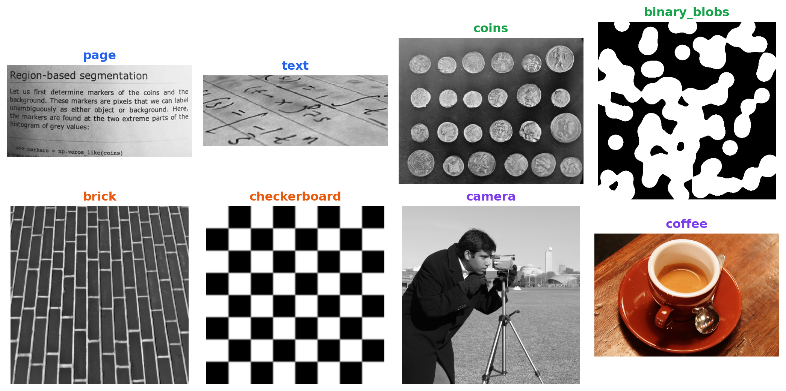
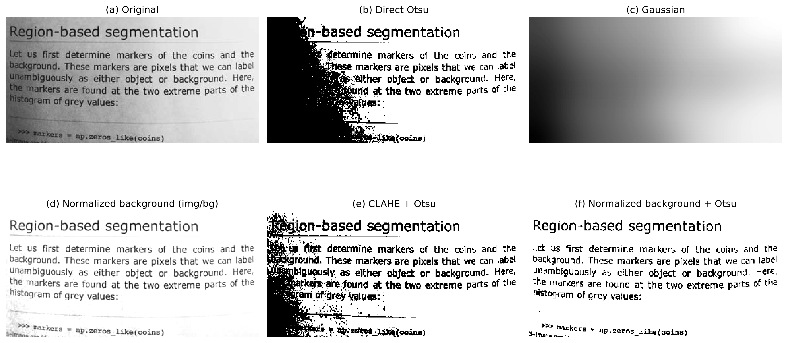
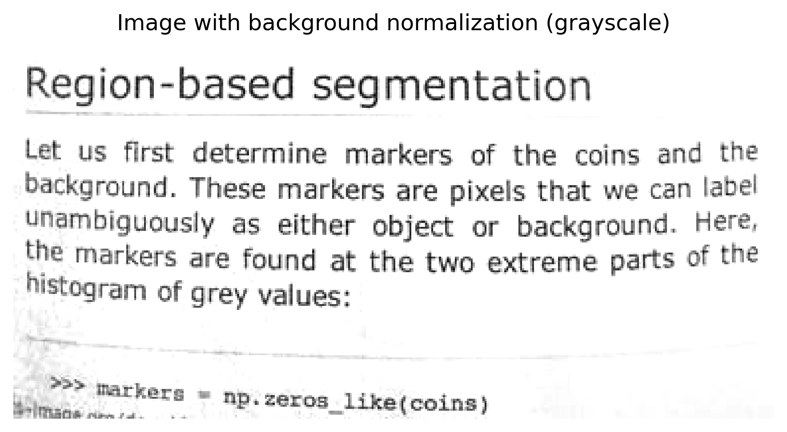
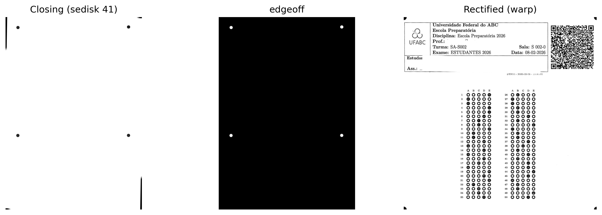
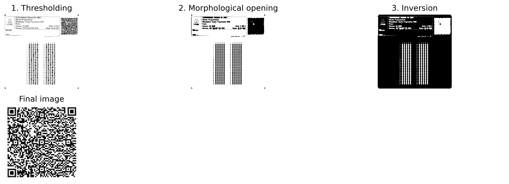
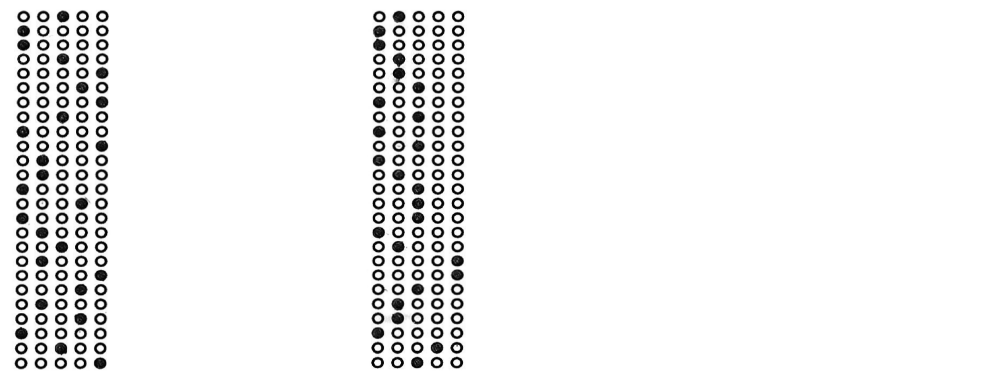
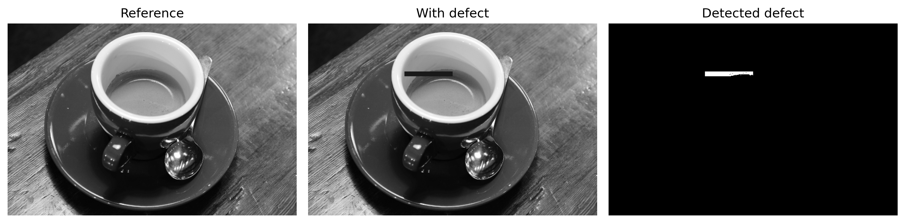

In Part I — Digital Image Processing (DIP), techniques for image transformation and enhancement were studied, such as morphological operations, spatial filtering, convolutions, thresholding, segmentation, and frequency-domain processing.
Part II — Computer Vision (CV) expands this scope by addressing the automatic interpretation of visual content, involving information extraction, pattern recognition, and decision-making from images.
This chapter presents this transition through two representative applications:
Automated Document Analysis, applied to the processing of forms, assessments, and other structured documents through optical mark recognition (OMR) systems;
Automated Industrial Inspection, focused on quality control and defect detection in production lines.
These applications integrate techniques for geometric structure detection, extraction of invariant descriptors, pattern recognition, and object classification, forming the foundation of various modern visual inspection and automation systems.
6.1 Chapter Objectives
By the end of this chapter, the student should be able to:
Evaluate the influence of preprocessing on the quality of automatic information recognition in documents;
Perform optical character recognition (OCR) to convert scanned documents into encoded text;
Apply natural language processing techniques, including machine translation, to the text obtained through OCR;
Apply techniques for geometric document alignment and rectification using the Hough Transform and projective transformations;
Implement optical mark recognition (OMR) systems for the automated reading of assessments and forms;
Detect and segment regions of interest based on morphological operations, contours, and geometric properties;
Decode two-dimensional markers and barcodes, integrating Computer Vision libraries into document processing pipelines;
Develop Computer Vision pipelines for automated document analysis.
This chapter marks the transition from Digital Image Processing, focused on image transformation, to Computer Vision, whose goal is to interpret visual content, extract information, and support automated analysis and decision-making processes.
6.2 Environment Setup
The examples in this chapter use libraries widely employed in CV-IP. The block below installs the necessary packages; in environments that already have them, the execution can be skipped.
import os, urllib.requesturl ="https://raw.githubusercontent.com/fzampirolli/pdi-vc/master/morph/config.py"ifnot os.path.exists("config.py"): urllib.request.urlretrieve(url, "config.py")import configconfig.setup()from morph import mm# install more dependencies beyond morph.py for this chapterimport sys, subprocess, importlib, shutildef setup_cap06():"""Installs system and Python-specific dependencies for Chapter 6 (OCR, PDF reading, barcodes)."""# 1. System dependenciesif'google.colab'in sys.modules:print("[ENVIRONMENT] Google Colab. Setting up system dependencies...") subprocess.run("apt-get update && apt-get install -y poppler-utils ""libzbar0 tesseract-ocr tesseract-ocr-por", shell=True, stdout=subprocess.DEVNULL, stderr=subprocess.DEVNULL )elif shutil.which("tesseract") isNone:# Local environment without tesseract: tries to install via apt-get (requires sudo/root)if shutil.which("apt-get"):print("[ENVIRONMENT] Local. Installing tesseract-ocr via apt-get (may ask for password)...") resultado = subprocess.run("sudo apt-get update && sudo apt-get install -y tesseract-ocr tesseract-ocr-por", shell=True )if resultado.returncode !=0or shutil.which("tesseract") isNone:print("[WARNING] Could not install automatically. ""Install manually: sudo apt install tesseract-ocr tesseract-ocr-por" )else:print("[WARNING] tesseract not found and apt-get unavailable. ""Install manually before running the OCR cells." )# 2. Python dependencies (installs only missing ones) pkgs = {"cv2": "opencv-python", "skimage": "scikit-image", "numpy": "numpy","pdf2image": "pdf2image", "pandas": "pandas", "tabulate": "tabulate","PyPDF2": "PyPDF2", "bcrypt": "bcrypt", "pyarrow": "pyarrow","pyzbar": "pyzbar", "pytesseract": "pytesseract", "deep_translator": "deep-translator" }for mod, pkg in pkgs.items():if importlib.util.find_spec(mod) isNone: resultado_pip = subprocess.run([sys.executable, "-m", "pip", "install", "-q", pkg])if resultado_pip.returncode !=0:print(f"[WARNING] Failed to install {pkg} (required for module {mod}).")setup_cap06()# 3. Global pipeline importsimport cv2, numpy as np, matplotlib.pyplot as pltfrom skimage import io, data, color
✅ Environment ready. Morph: 1.1.9 | OpenCV: 5.0.0
[ENVIRONMENT] Local. Installing tesseract-ocr via apt-get (may ask for password)...
[WARNING] Could not install automatically. Install manually: sudo apt install tesseract-ocr tesseract-ocr-por
In addition to these libraries, the didactic module morph.py will be used, developed to simplify image reading, visualization, and processing operations throughout this book. The following code checks its availability, performs the download when necessary, and confirms the loaded version.
The examples presented in this part of the book use, whenever possible, scanned documents, answer sheets, barcodes, QRCodes, and other images from real-world applications. To make the experiments fully reproducible — including in environments without internet access or access to the original MCTest files — we also employ public images widely used in teaching and research in Digital Image Processing and Computer Vision (DIP-CV).
TipWhy Use a Benchmark Image Database?
Images such as camera() and coins() have been used for decades in textbooks, scientific articles, and teaching materials in DIP-CV. Their use offers important advantages:
Reproducibility: any reader obtains exactly the same images, regardless of the computer or operating system used, without requiring external downloads or files specific to this book;
Comparability: the results produced can be compared directly with those reported in the literature, since the same image sets are widely adopted as a reference;
Focus on algorithms: because these images are compact, well-documented, and distributed without usage restrictions for educational and scientific purposes, they allow attention to be concentrated on processing techniques, reducing interference related to data acquisition or management.
6.3.1 Public Images with skimage.data
The skimage.data module provides a collection of reference images widely used in teaching, research, and algorithm validation in DIP-CV. Inspecting the data.__all__ attribute shows that the current version includes 42 items, encompassing natural photographs, scanned documents, medical images, microscopy, textures, synthetic patterns, three-dimensional models, and time sequences. It is worth noting that some of these items correspond to utility functions, such as data_dir() and download_all(), rather than images proper.
Since the goal of this chapter is to present applications of document analysis and visual inspection, Table 6.2 compiles a representative selection of the most relevant images, organized according to their main applications in Computer Vision. Figure 6.1 presents a sample of these images, grouped according to the same classification adopted in the table.
NoteImages used in this chapter
Although skimage.data provides dozens of reference images, only four are directly employed in the experiments of this chapter. They were selected because they reproduce, in a controlled manner, characteristics frequently found in scanned documents and industrial visual inspection systems. Table 6.1 summarizes the role of each of them throughout this chapter.
Table 6.1: Images from skimage.data used in the experiments of this chapter.
Image
Application in the chapter
data.page()
Scanned page used in experiments on illumination correction, local enhancement (CLAHE), and automatic Otsu thresholding.
data.text()
Document containing printed text, employed to illustrate segmentation, contour extraction, and typical OCR and OMR steps.
data.coffee()
Color photograph with natural illumination variations, used to exemplify techniques applicable to non-documental real scenes.
data.brick()
Reference texture employed in examples of surface inspection and defect detection through local variance analysis.
Table 6.2: Selection of representative public images available in the skimage.data module, organized by application area.
Categoria
Função
Descrição
📄 Documentos & OCR/OMR
data.page()
Página digitalizada de documento — normalização de fundo, CLAHE e Otsu.
📄 Documentos & OCR/OMR
data.text()
Texto impresso — segmentação e extração de contornos em cenários de OCR/OMR.
🔵 Segmentação, Morfologia & Contornos
data.coins()
Conjunto de moedas — referência clássica para segmentação e watershed.
🔵 Segmentação, Morfologia & Contornos
data.clock()
Relógio analógico — detecção de formas e contornos.
🔵 Segmentação, Morfologia & Contornos
data.binary_blobs()
Blobs binários sintéticos — conectividade e morfologia matemática.
🔵 Segmentação, Morfologia & Contornos
data.moon()
Superfície lunar — segmentação de crateras por relevo de intensidade.
🧵 Textura & Inspeção Industrial
data.brick()
Textura uniforme de tijolos — detecção de defeitos por variância local.
🧵 Textura & Inspeção Industrial
data.checkerboard()
Padrão xadrez — calibração de câmera e transformações geométricas.
🖼️ Fotografias Clássicas de PDI/VC
data.camera()
Fotógrafo com tripé — imagem de referência mais citada na literatura de PDI.
🖼️ Fotografias Clássicas de PDI/VC
data.astronaut()
Retrato colorido de astronauta — filtragem e realce em cor.
🖼️ Fotografias Clássicas de PDI/VC
data.coffee()
Xícara de café — cena real com variação de iluminação e cor.
🖼️ Fotografias Clássicas de PDI/VC
data.cat() / data.chelsea()
Fotografias coloridas de gatos — detecção de bordas e realce.
🖼️ Fotografias Clássicas de PDI/VC
data.horse()
Silhueta binária de cavalo — descritores de forma e contorno.
import matplotlib.pyplot as pltfrom skimage import data# Images ordered by category; the title color reproduces the category color in the previous tab.imgs = [ ("page", data.page(), "#2563eb"), # Documents & OCR/OMR ("text", data.text(), "#2563eb"), ("coins", data.coins(), "#16a34a"), # Segmentation & morphology ("binary_blobs", data.binary_blobs(), "#16a34a"), ("brick", data.brick(), "#ea580c"), # Texture & industrial inspection ("checkerboard", data.checkerboard(),"#ea580c"), ("camera", data.camera(), "#7c3aed"), # Classic computer vision/image processing photographs ("coffee", data.coffee(), "#7c3aed"),]fig, ax = plt.subplots(2, 4, figsize=(11, 5.5))for a, (nome, img, cor) inzip(ax.ravel(), imgs): a.imshow(img, cmap="gray") a.set_title(nome, color=cor, fontweight="bold") a.axis("off")plt.tight_layout()

Figure 6.1: Sample of public images from skimage.data, grouped by application area.
6.4 Background Normalization and Local Contrast Equalization
Segmentation quality depends directly on the characteristics of the input image. In scanned documents, illumination variations, shadows, overexposed regions, and differences in paper tone reduce the contrast between the foreground and the background, making it difficult to apply global thresholding methods, such as the Otsu algorithm.
To minimize these effects, two complementary preprocessing techniques are employed:
Background normalization: estimates the low-frequency component of the image through strong smoothing and then normalizes the original image with respect to this estimated background. This procedure reduces illumination gradients and compensates for slow intensity variations while preserving the structures of interest.
CLAHE (Contrast Limited Adaptive Histogram Equalization), presented in Chapter 4: divides the image into small regions (tiles) and performs histogram equalization for each region independently. Contrast is limited to avoid excessive noise amplification, making the technique especially suitable for images with local illumination variations.
Figure 6.2 compares these strategies using the page() image from the skimage.data library. Six results are presented: (a) the original image; (b) direct binarization using the Otsu method, used as a reference; (c) the background estimated by Gaussian filtering; (d) the image after background normalization; (e) the binarization obtained after applying CLAHE followed by the Otsu method; and (f) the binarization obtained after background normalization followed by the application of the Otsu method.
The comparison allows one to observe the effect produced by each preprocessing stage and its influence on segmentation quality. In particular, background normalization reduces global illumination variations, while CLAHE increases local contrast between characters and background. Depending on the image characteristics, one or the other strategy may yield superior results, and there is no universally more suitable technique.
import cv2from skimage import datafrom morph import mmimg = data.page() # or: img = mm.gray(img_final) — with exam sheet image# ── Method 1: Background normalization + Otsu ────────────────────────────────# Estimates the background with a large-sigma Gaussian filter (slow light variations)# and divides pixel by pixel to cancel the illumination gradientbg = cv2.GaussianBlur(img, (0, 0), sigmaX=25)img_norm = cv2.divide(img, bg, scale=255)img_norm_otsu = mm.threshold(img_norm)# ── Method 2: CLAHE + Otsu ────────────────────────────────────────────────# tileGridSize defines the size of each local region (tile)# clipLimit controls the amplification ceiling — high values increase contrast# but also amplify noiseclahe = cv2.createCLAHE(clipLimit=2.0, tileGridSize=(8, 8))img_clahe = clahe.apply(img)img_clahe_otsu = mm.threshold(img_clahe)# ── Method 0: Direct Otsu (no preprocessing) — reference ───────────img_otsu = mm.threshold(img)mm.show( [img, img_otsu, bg, img_norm, img_clahe_otsu, img_norm_otsu], titles=["(a) Original", "(b) Direct Otsu", "(c) Gaussian", \"(d) Normalized background (img/bg)", "(e) CLAHE + Otsu", \"(f) Normalized background + Otsu"], cols=3, figsize=(14, 8))

Figure 6.2: Comparison between preprocessing strategies for text image binarization: (a) original image; (b) direct thresholding by Otsu’s method; (c) background estimated by Gaussian filtering; (d) image after background normalization (division by the smoothed image); (e) CLAHE followed by Otsu thresholding; and (f) background normalization followed by Otsu thresholding. The images illustrate the effect of each technique on compensating for illumination variations and on segmentation quality.
Note🧠 Why It Works — Background Normalization vs. CLAHE
Background normalization: by dividing the image by a heavily smoothed version of itself, slow variations in illumination (light gradient, edge shadow) are eliminated without affecting fine details — text, lines, bubbles. The result is an image with approximately uniform lighting, where Otsu’s global threshold works well across the entire page.
CLAHE: a globally equalized histogram “stretches” the tones of the entire image at once — useful when lighting is uniform, but problematic when it is not. CLAHE divides the image into small blocks (tiles) and equalizes each one separately, with a maximum amplification limit (clipLimit) to avoid amplifying noise. It is especially effective for enhancing locally underexposed regions, but it does not eliminate global gradients — thus, applying it after background normalization tends to produce more consistent results.
6.5 Optical Character Recognition (OCR)
After binarization, the next stage in document processing consists of converting the visual representation of characters into digitally encoded text, a process known as Optical Character Recognition (OCR).
In general terms, an OCR system comprises three stages:
Segmentation: identifies lines, words, and characters in the image, using horizontal and vertical projections or connected-component detection.
Feature extraction: represents each character through visual attributes, such as edges, curvatures, and stroke patterns.
Recognition: associates the extracted attributes with the most likely character. Current systems predominantly use recurrent neural networks (LSTM) or architectures based on transformers.
In this book, we use Tesseract OCR, accessed through the pytesseract library (installation: pip install pytesseract). Originally developed by Hewlett-Packard between 1985 and 1995 and currently maintained by Google, Tesseract is described in Smith (2007) and Smith (2013). In recent versions, text recognition is performed by LSTM neural networks.
OCR performance depends on the quality of the input image. Noise, low contrast, geometric distortions, and uneven illumination reduce the recognition rate. For this reason, steps such as deskewing, background normalization, and adaptive equalization (CLAHE) are part of image preprocessing.
Note🧠 Does Tesseract require a binarized image?
Tesseract internally incorporates an adaptive binarization step before character recognition. For this reason, providing the OCR with a previously binarized image does not always yield the best results.
Since thresholding is an irreversible operation, it may eliminate subtle intensity variations at character edges, such as antialiasing, which can assist the recognition mechanism. In many cases, a grayscale image with good illumination and contrast produces a more faithful transcription than its binarized version.
To investigate this effect, we compare the text extracted by Tesseract from four versions of the same image, presented in Figure 6.3: (a) original image; (b) image subjected to adaptive equalization (CLAHE) followed by thresholding using Otsu’s method; (c) image subjected to background normalization followed by thresholding using Otsu’s method; and (d) image subjected only to background normalization, preserving grayscale tones.
The comparison between versions (c) and (d) shows that, in passages containing visually similar characters, the grayscale version (d) produced a transcription more faithful to the original text than the binarized version (c). This result indicates that thresholding applied during preprocessing can eliminate information useful for recognition. Thus, although binarization is essential for several image processing operations, it does not necessarily constitute the best input for OCR. The choice of preprocessing technique should consider the subsequent stage of the document pipeline.
import pytesseractimport shutil as _shif _sh.which("tesseract") isNone:# Build environment without Tesseract installed (e.g., without apt/sudo):# degrades instead of breaking the render. On Colab/local with Tesseract,# nothing changes. _AVISO_OCR ="[Tesseract OCR indisponivel neste ambiente - texto omitido]" pytesseract.image_to_string =lambda*a, **k: _AVISO_OCRfrom skimage import dataimport cv2from morph import mmimg = data.page()# ── Reusing the results from the previous section ────────────────────────img_otsu = mm.threshold(img)bg = cv2.GaussianBlur(img, (0, 0), sigmaX=25)img_norm = cv2.divide(img, bg, scale=255) # grayscale, without Otsuimg_norm_otsu = mm.threshold(img_norm) # binarizedclahe = cv2.createCLAHE(clipLimit=2.0, tileGridSize=(8, 8))img_clahe = clahe.apply(img)img_clahe_otsu = mm.threshold(img_clahe)# ── Tesseract configuration ──────────────────────────────────────────────# --psm 6: assumes a single uniform block of text (suitable for the `page` image)config ="--psm 6"texto_original = pytesseract.image_to_string(img, config=config)texto_clahe_otsu = pytesseract.image_to_string(img_clahe_otsu, config=config)texto_norm_otsu = pytesseract.image_to_string(img_norm_otsu, config=config)texto_norm_gray = pytesseract.image_to_string(img_norm, config=config)for nome, texto inzip( ["(a) Original", "(b) CLAHE + Otsu", "(c) Normaliz. fundo + Otsu", "(d) Normaliz. fundo (tons de cinza)"], [texto_original, texto_clahe_otsu, texto_norm_otsu, texto_norm_gray]):print(f"--- {nome} ---")print(texto.strip(), "\n")mm.show( [img, img_clahe_otsu, img_norm_otsu, img_norm], titles=["(a) Original", "(b) CLAHE + Otsu", "(c) Background norm. + Otsu", "(d) Background norm. (grayscale)"], cols=4, figsize=(16, 4))
Figure 6.3: Comparison of the text extracted by Tesseract from four versions of the same image: (a) original image; (b) CLAHE followed by Otsu thresholding; (c) background normalization followed by Otsu thresholding; and (d) background normalization in grayscale, without thresholding. The comparison shows that external binarization does not always favor recognition, since Tesseract already performs its own adaptive binarization internally.
Note🧠 Why does preprocessing improve OCR?
OCR performance directly depends on the quality of the input image. Low contrast, uneven illumination, noise, and geometric distortions hinder the separation between text and background and increase the likelihood of recognition errors.
Techniques such as background normalization and adaptive equalization (CLAHE) correct illumination gradients and enhance local contrast between characters and background, producing images that are more suitable for automatic recognition. Thresholding, in turn, should be applied with caution: as it is an irreversible operation, it can eliminate subtle intensity variations at character edges—such as antialiasing—which the OCR engine itself uses internally to resolve ambiguities between visually similar symbols. For this reason, grayscale images, corrected only for illumination, often produce more faithful transcriptions than their binarized versions.
In documents captured by mobile device cameras, preprocessing tends to provide greater performance gains than in documents scanned with a scanner, where illumination is usually more uniform.
6.6 Automatic Translation of Recognized Text
After optical character recognition, the resulting text can be subjected to natural language processing techniques, such as spell checking, indexing, summarization, and machine translation.
Machine translation constitutes an independent stage of OCR. While OCR converts the characters present in the image into encoded text, translation operates on that text in the document’s original language. Thus, recognition errors can be propagated to the translation, compromising the quality of the result. Current machine translation systems predominantly employ neural architectures based on attention mechanisms and transformers [Bahdanau; Cho; Bengio (2015); Vaswani (2017)].
In this example, the text obtained from the image subjected only to background normalization, without thresholding (item d of Figure 6.3), is used, as it presents the most faithful transcription among the strategies evaluated in the previous section.
The translation is carried out using the deep-translator library (installation: pip install deep-translator), which provides an interface to different machine translation services, including Google Translate.
from deep_translator import GoogleTranslatorimport shutil as _sh# Text obtained by OCR from the image with background normalization (grayscale)texto_en = texto_norm_grayif _sh.which("tesseract") isNone:# Build environment without Tesseract installed (see previous cell): text_en# is already the OCR unavailable placeholder, not real text — skip translation# instead of failing when trying to translate a string that is not really English. texto_pt ="[Tradução indisponível neste ambiente - Tesseract OCR ausente]"else: texto_pt = GoogleTranslator(source="en", target="pt").translate(texto_en)print("--- Original text generated by the normalized grayscale image (OCR, EN) ---")print(texto_en)print("\n--- Translated text (PT-BR) ---")print(texto_pt)mm.show( [img_norm], titles=["Image with background normalization (grayscale)"], cols=1, figsize=(6, 4))
--- Original text generated by the normalized grayscale image (OCR, EN) ---
[Tesseract OCR indisponivel neste ambiente - texto omitido]
--- Translated text (PT-BR) ---
[Tradução indisponível neste ambiente - Tesseract OCR ausente]

Figure 6.4: Automatic recognition and translation flow. The image pre-processed by background normalization, without thresholding, is used as input to Tesseract OCR, and the recognized text is translated from English to Portuguese using the deep-translator library.
Note🧠 Why does OCR quality influence translation?
Machine translation uses as input the text produced by OCR. Recognition errors, such as incorrect characters, incomplete, or fragmented words, are propagated to the translation stage and can alter the meaning of the text.
Consequently, the quality of the translation depends directly on the fidelity of the transcription obtained by OCR. As discussed previously, this fidelity is not always maximized by external binarization: grayscale images, corrected only for illumination, can preserve relevant information for distinguishing visually similar characters. Thus, image preprocessing—and the appropriate choice of its steps based on the subsequent task—contributes to improving not only character recognition but also the performance of later natural language processing stages, such as translation, indexing, and summarization.
6.7 Fundamentals of OMR and Industrial Inspection
Optical Mark Recognition (OMR) is a Computer Vision technique aimed at the automatic identification of markings in predefined positions on a form. Its applications include answer sheets, questionnaires, administrative forms, and other structured documents.
Unlike OCR (Optical Character Recognition), which recognizes characters and words, OMR determines the presence, absence, or intensity of marks in previously known regions. Instead of interpreting text, it exploits geometric and statistical properties associated with the filling of these regions.
Modern OMR systems process images obtained from scanners, cameras, or mobile devices, automating tasks that previously relied on specialized equipment.
In general terms, an OMR system comprises the following stages:
Acquisition: conversion of the physical document into digital format;
Pre-processing: geometric correction, noise reduction, and binarization;
Location of regions of interest: identification of the areas intended for markings;
Analysis of markings: assessment of the filling of candidate regions;
Interpretation: conversion of markings into responses or structured data.
These principles extend naturally to Automated Industrial Inspection. On production lines, the same sequence — acquisition, pre-processing, segmentation, feature extraction, and decision — is employed to detect surface defects, verify component integrity, and measure dimensions with subpixel precision. The difference lies in the application domain: while OMR operates on documents with a predefined structure, industrial inspection deals with objects whose geometric and radiometric variations must be modeled more flexibly.
In the following sections, both applications are developed through practical projects that reproduce typical stages of real systems.
6.8 Practical Projects: Building a Document Analysis Pipeline
The concepts in this chapter will be developed through projects that reproduce typical stages of real document analysis systems, introducing techniques reusable in OCR, OMR, visual inspection, and form processing applications.
Deskew correction is a fundamental stage in document processing. Rotations introduced during scanning or capture compromise the location of regions of interest and reduce the accuracy of subsequent stages.
In this project, a system will be developed to automatically estimate the predominant orientation of the document and correct its skew. To this end, classical edge detection techniques using the Canny operator and line detection via the Hough Transform will be employed. From the identified lines, the rotation angle will be estimated, and an affine transformation will be applied to produce an aligned version of the document.
Since forms and answer sheets are frequently distributed in PDF format, the pipeline begins with the rasterization of each page, converting it into a matrix image. In this chapter, this stage will be performed using the pdf2image library, generating PNG images at 300 DPI (dots per inch) resolution. From these, the edge detection techniques, Hough Transform, segmentation, contour extraction, and automatic pattern recognition studied throughout the chapter can be applied.
import osimport urllib.requestfrom pdf2image import convert_from_pathfrom skimage import dataimport cv2# Directory of microdata and answer sheets of the institutional examfile_path ="dados/provas_qrcode_EP.pdf"url_github = ("https://raw.githubusercontent.com/fzampirolli/""pdi-vc/master/all/cap06/dados/provas_qrcode_EP.pdf")# If the file does not exist locally, it is automatically downloaded from GitHubifnot os.path.exists(file_path):print(f"[DOWNLOAD] Downloading PDF from GitHub: {url_github}")try:# Ensures the 'data' folder exists before saving os.makedirs(os.path.dirname(file_path), exist_ok=True) urllib.request.urlretrieve(url_github, file_path)print("[DOWNLOAD] PDF downloaded successfully!")exceptExceptionas e:print(f"[DOWNLOAD] Failed to download the file: {e}")print(f"PDF of scanned answer sheets: {file_path}")if os.path.exists(file_path):# Rasterization of pages with optimized 300 DPI resolution pages = convert_from_path(file_path, dpi=300)for i, page inenumerate(pages): saida =f"test{i+1:02d}.png" page.save(saida)print(f"[INGESTION] PDF page converted successfully: {saida}")else:print("[WARNING] PDF file not found in path. Enabling fallback via skimage.data.")# Injects public text matrix to ensure continuous pipeline execution img_fallback = data.text() cv2.imwrite("test02.png", img_fallback)print("[INGESTION] Structured fallback image: test02.png")# Loads and displays the initial rasterized image using the morph ecosystemif os.path.exists('test02.png'): img_original = mm.read('test02.png')else:# Definitive fallback in case even skimage fails img_original = np.ones((400, 400), dtype=np.uint8) *255mm.show(img_original, figsize=(4, 3))
PDF of scanned answer sheets: dados/provas_qrcode_EP.pdf
[INGESTION] PDF page converted successfully: test01.png
[INGESTION] PDF page converted successfully: test02.png
[INGESTION] PDF page converted successfully: test03.png
Figure 6.5: Pipeline for document ingestion: adaptive rasterization of PDF pages into discrete arrays in PNG format, showing page two.
6.8.2 Deskew Algorithm
The deskew stage aims to estimate and correct the global tilt of a scanned document, aligning its content with the image axes. Figure 6.7 presents the complete processing flow, from the original image to the result after geometric correction. Additionally, the simulator in Figure 6.6 allows visualizing how the Hough Transform works and understanding how the predominant orientation is estimated.
The procedure consists of three main stages:
edge detection using the Canny operator;
estimation of the predominant orientation through the Linear Hough Transform;
tilt correction using an affine rotation transformation.
After rectification, the document assumes an approximately horizontal orientation, favoring the subsequent stages of segmentation, connected component labeling, and recognition of characters and marks.
6.8.3 Mathematical Modeling
The following subsections formalize, in mathematical terms, the steps described previously, relating the image gradient, the parametrization of lines in the Hough space, and the rotation matrix used in the geometric correction.
6.8.3.1 Edge Detection
Initially, the image is smoothed by a Gaussian filter, reducing the effect of high-frequency noise that can generate spurious edges. The concepts of spatial filtering and convolution were presented in Chapter 3.
Next, the Canny operator estimates the image gradient. Let \(f(x,y)\) be the image intensity and \(\alpha\) the rotation angle.
\(f(x,y)\) represents the image intensity at position \((x,y)\);
\(\frac{\partial f}{\partial x}\) and \(\frac{\partial f}{\partial y}\) are the partial derivatives in the horizontal and vertical directions;
\(|\nabla f(x,y)|\) is the gradient magnitude.
After computing the gradient, the algorithm applies non-maximum suppression and hysteresis thresholding, producing a binary image containing the main edges of the document.
6.8.3.2 Hough Transform
The binary edge image is processed by the Linear Hough Transform, whose objective is to detect approximately straight structures. Instead of the Cartesian representation of the line, \(y=ax+b\), the normal form representation is used,
\[
\rho = x\cos\theta + y\sin\theta,
\]
where:
\(x\) and \(y\) are the coordinates of a point belonging to the line;
\(\rho\) is the perpendicular distance between the line and the origin of the image coordinate system;
\(\theta\) is the angle formed between the normal to the line and the horizontal axis of the image.
In this representation, each edge point \((x,y)\) generates a curve in the parameter space \((\rho,\theta)\). The intersection of the curves produced by points belonging to the same line gives rise to maxima in a two-dimensional array called the accumulator. Thus, the peaks of the accumulator correspond to the predominant lines in the image, such as document edges, form lines, or text lines.
To estimate the global skew of the document, only the lines whose angles satisfy
\[
-45^\circ \leq \theta \leq 45^\circ
\]
are considered. This restriction eliminates orientations incompatible with the expected layout of the document and reduces the influence of vertical lines or irrelevant structures. Let \(\theta_1,\theta_2,\ldots,\theta_n\) be the set of angles of the selected lines. The global skew estimate is obtained by the median,
\(\theta_i\) is the angle of the \(i\)-th line detected by the Hough Transform;
\(n\) is the number of lines considered after angular filtering;
\(\hat{\theta}\) is the estimate of the global skew of the document.
The median is adopted because it is less sensitive to the presence of isolated detections (outliers) than the arithmetic mean, yielding a more stable estimate of the predominant orientation.
6.8.3.3 Affine Rotation
Let \(\hat{\theta}\) be the slope estimated in the previous step. The geometric correction consists of applying an affine rotation transformation around the center of the image, so that the predominant orientation coincides with the horizontal axis. Affine transformations were studied in Chapter 2, along with translation, scaling, shearing, and rotation operations.
Let \((x,y)\) be the position of a pixel relative to the center of the image and \((x',y')\) its position after rotation. The transformation is described by \[
\begin{bmatrix}
x'\\
y'
\end{bmatrix} =
R(\alpha)
\begin{bmatrix}
x\\
y
\end{bmatrix},
\]
\((x,y)\) being the original pixel coordinates relative to the center of the image;
\((x',y')\) being the pixel coordinates after rotation;
\(\alpha\) being the rotation angle applied to compensate for the estimated document slope;
\(R(\alpha)\) being the rotation matrix.
In practice, the applied angle corresponds to the opposite of the estimated slope,
\[
\alpha = -\hat{\theta},
\]
where \(\hat{\theta}\) represents the predominant orientation obtained by the Hough Transform.
Since the transformed coordinates do not always coincide with integer positions in the pixel grid, it is necessary to resample the image to determine the new intensity values. In the implementation presented in this chapter, the mm.rotate function performs this operation using bicubic interpolation, reducing resampling artifacts and preserving the visual continuity of edges and characters.
Canny: Detects edges of text segments — high-gradient pixels that form the outlines of lines.
2
Hough: Each edge pixel votes for the associated lines. The median of the angles of the lines with the most votes estimates the global tilt.
3
Inverse Rotation: Applies an affine transform with the estimated opposite angle, reorienting the document horizontally.
–
Figure 6.6: Interactive skew correction simulator (deskew): move the slider to tilt the document and observe the three steps of the pipeline — tilted image, Canny edges, and corrected result.
Figure 6.7: Axial rectification pipeline: comparative display between the original rotated input, the Canny structural gradient map, and the final aligned result with normalized white background.
Note🧠 Why It Works — Hough Transform
In the Hough Transform, each edge pixel contributes votes to all lines that can pass through its position. Instead of selecting only the line with the highest number of votes, the algorithm considers all lines whose vote count exceeds a minimum threshold and calculates their respective angles. The global document skew is then estimated by the median of these angles, a measure that is robust to outliers. Thus, spurious lines produced by shadows, noise, or other elements of the image exert little influence on the final estimate, as long as the majority of detected lines corresponds to the document edges.
6.8.4 Practical Limitations
Although it performs well under typical scanning conditions, the method relies on the existence of sufficiently well-defined linear structures that can be detected by the Hough Transform, such as page edges, form lines, or text lines. Its accuracy may be reduced in images with low resolution, excessive noise, strong shadows, or large skew angles. In general, scanned documents at resolutions near 300 DPI with uniform lighting yield adequate results for OCR and OMR applications.
The implementation presented in this chapter is intended for didactic purposes, illustrating the principles of automatic skew correction through edge detection, the Hough Transform, and affine rotation. Because it uses only the orientation of predominant linear structures, the method can be applied to different types of documents without relying on specific markers.
In real document analysis systems, however, alignment typically uses previously known geometric markers. In the answer sheet model employed by the MCTest ecosystem, for example, four black reference discs are used, in addition to the regions corresponding to the header, the QRCode, and the answer boxes. Locating these elements allows the rotation, scale, and translation of the sheet to be estimated simultaneously, making registration less sensitive to the amount of text, the absence of structural lines, and variations in printing or scanning.
For this reason, the Hough Transform-based approach is used in this chapter to introduce the fundamentals of the problem, while subsequent stages adopt alignment by geometric markers, the predominant strategy in OMR and document analysis systems.
6.8.5 Edge and Contour Detection
The precise localization of regions of interest is an essential step in OMR systems. In the answer sheet model used in this chapter, the header and the answer grid are contained within a virtual rectangle delimited by four black discs positioned at the corners. The identification of these markers allows the region of interest to be located and geometric distortions introduced during image acquisition to be corrected.
The procedure comprises five steps. Initially, a morphological closing (dilation followed by erosion) is applied, an operation studied in Chapter 4, using a disk-shaped structuring element (mm.sedisk(33)). This operation reduces small discontinuities and preserves the reference discs, making them more homogeneous. Next, the image is inverted (mm.neg), so that the discs become light components against a dark background.
In the following step, the operation mm.edgeoff (Chapter 4) is applied, which removes components connected to the image borders, eliminating artifacts such as scanning shadows, crop marks, and other spurious objects at the margins. The remaining components are then analyzed based on their contours and filtered by geometric properties, such as area and circularity, to identify candidate discs. The MCTest implementation makes this process more robust by selecting, among all candidates, the four whose centers form a rectangle with width compatible with that of the image, reducing the occurrence of false positives.
Finally, the centers of the four discs are spatially ordered (top left, top right, bottom left, and bottom right) and used as control points in a perspective transformation (perspective warp). This transformation rectifies the image, producing an aligned representation with known dimensions, suitable for the subsequent segmentation and recognition steps.
The main steps of this pipeline, from morphological processing to the rectified image, are illustrated below.
import cv2import numpy as npfrom morph import mm# img: grayscale image of the answer sheetif img_final.ndim ==2: img = img_finalelse: img = mm.gray(img_final)# 1. Morphological closing: preserves dark discs, removing everything smaller than the discimg_close = mm.close(img, mm.sedisk(41))# 2. Inversion: dark discs become bright components on a dark backgroundimg_neg = mm.neg(img_close)# 3. Removes connected components touching the image borderimg_edgeoff = mm.edgeoff(img_neg)# 4. Extraction of external contourscontornos, _ = cv2.findContours(img_edgeoff, cv2.RETR_EXTERNAL, cv2.CHAIN_APPROX_SIMPLE)# 5. Filtering by area and circularity, keeping only the 4 discscentros = []for c in contornos: area = cv2.contourArea(c) perimetro = cv2.arcLength(c, True)if area <50or perimetro ==0:continue circularidade =4* np.pi * area / (perimetro **2)if circularidade >0.8: M = cv2.moments(c) cx, cy = M["m10"] / M["m00"], M["m01"] / M["m00"] centros.append((cx, cy))# Robust verification: interrupts the pipeline with a clear message instead of AssertionErroriflen(centros) !=4:print(f"[WARNING] Expected 4 marker discs, found {len(centros)}.")print(" Check whether the image is a valid MCTest answer sheet")print(" or adjust the circularity and minimum area parameters.") img_retificada = img # fallback: preserves the image without rectificationelse:# 6. Sorting of centers: top-left, top-right,# bottom-left, bottom-right pts = np.array(centros, dtype=np.float32) soma = pts.sum(axis=1) diff = pts[:, 0] - pts[:, 1] tl = pts[np.argmin(soma)] br = pts[np.argmax(soma)] tr = pts[np.argmax(diff)] bl = pts[np.argmin(diff)] pts_ordenados = np.array([tl, tr, bl, br], dtype=np.float32)# 7. Rectification by perspective transformation (warp) largura, altura =800, 800 destino = np.array( [[0, 0], [largura, 0], [0, altura], [largura, altura]], dtype=np.float32 ) M_persp = cv2.getPerspectiveTransform(pts_ordenados, destino) img_retificada = cv2.warpPerspective(img, M_persp, (largura, altura)) mm.show( [img_close, img_edgeoff, img_retificada], titles=["Closing (sedisk 41)", "edgeoff", "Rectified (warp)"], cols=3, figsize=(12, 4) )mm.write(img_retificada, "img_beetween_disks.png")

Figure 6.8: Detection of marker discs, contour extraction, and rectification by perspective transformation.
Note🧠 Why It Works — From Morphological Closing to Rectification
Morphological closing: dilation followed by erosion fills small discontinuities and smooths the contours of objects without significantly altering their overall shape. By using a large structuring element (sedisk(41)), fine details such as texts, form lines, and small noise tend to be incorporated into the background during processing, while larger-scale objects, such as the reference disks, remain preserved and become more homogeneous.
Circularity: after isolating the candidate components, the metric \(C=\frac{4\pi A}{P^2}\) quantifies how closely their shape approximates a circle. Its value is equal to 1 for a perfect circle and decreases as the contour becomes more irregular. Thus, a threshold such as \(C>0{,}8\) allows discarding most false positives without resorting to learning models. A simulator of this metric is presented in Figure 6.9.
Perspective warp: once the four reference disks have been identified, their centers are used as control points to estimate the projective transformation that maps the captured image onto the document plane. This transformation corrects the distortions introduced by perspective during image acquisition, producing a frontal representation with known dimensions and suitable for the subsequent segmentation and recognition stages.
⭕ Simulator: Circularity FilteringC = 4πA / P²
Threshold C
0.60
Accepted
0
Rejected
0
Accepted (C ≥ threshold)Rejected (C < threshold)
🧠 Circularity Formula
The metric C = 4πA / P² relates the area A of the component to the square of its perimeter P.
For a perfect circle, C = 1; for more irregular or elongated shapes, C approaches 0.
In the MCTest context, a threshold such as C > 0.60 selects the reference discs, discarding texts, lines, and artifacts from the answer sheet.
Figure 6.9: Interactive simulator of circularity filtering: move the slider to adjust the threshold C and observe which components are accepted (green) or rejected (red).
6.8.6 Isolation, Segmentation, and Decoding of the QRCode
After the geometric rectification of the answer sheet, detection and decoding of the QRCode present in the form are performed. This marker stores information used by the OMR (Optical Mark Recognition) system, such as the student’s identification, the exam code, and its variation, enabling the retrieval of the corresponding answer key from the database. For security reasons, this information is encrypted before generating the QRCode. Thus, the decoded sequence corresponds to a hexadecimal string, whose interpretation is performed exclusively by the MCTest system. The procedure consists of three stages: morphological preprocessing, isolation of the QRCode region, and decoding of its content.
Initially, the rectified grayscale image is binarized using the mm.threshold operation. Next, a morphological opening (erosion followed by dilation), studied in Chapter 4, is applied using a square structuring element (mm.sebox(2)). This operation removes small noises and smooths imperfections without compromising the marker’s structure. Finally, the image is inverted (mm.neg), so that the QRCode becomes a light component against a dark background, facilitating the extraction of its contours.
The location of the QRCode is carried out by analyzing the external contours of the binarized image. Among the detected components, the one with the largest area and approximately square geometry is selected, discarding the other printed elements on the sheet. Subsequently, the corresponding region is expanded by a small safety margin, ensuring the complete preservation of the marker.
The QRCode is then extracted directly from the rectified grayscale image, preserving its radiometric quality. Since this region generally presents reduced dimensions, resizing with cubic interpolation is applied, increasing the spatial resolution and favoring the identification of its modules. The reading is performed by the OpenCV QRCode detector (cv2.QRCodeDetector), which retrieves the originally encoded character sequence.
The complete flow of this processing, from morphological preprocessing to QRCode decoding, is illustrated in Figure 6.10. The excerpt shown in the output corresponds only to the beginning of the encrypted hexadecimal string; its complete interpretation is performed internally by MCTest after decoding.
import cv2import numpy as npfrom morph import mm# f: rectified image converted to the correct 8-bit type (0–255)f = img_retificada.astype('uint8')# 1. Thresholding: converting the grayscale image to binaryf_thresh = mm.threshold(f)# 2. Morphological opening: removes small noise and smooths block contoursf_open = mm.open(f_thresh, mm.sebox(2))# 3. Morphological inversion: dark modules become light components on a dark backgroundf_inv = mm.neg(f_open)# 4. Safe conversion to uint8 with 0–255 scaleimg_uint8 = (f_inv.astype(np.uint8) *255) if f_inv.max() ==1else f_inv.astype(np.uint8)# 5. Detection of external contourscontornos, _ = cv2.findContours(img_uint8, cv2.RETR_EXTERNAL, cv2.CHAIN_APPROX_SIMPLE)ifnot contornos:raiseValueError("Nenhum contorno encontrado. Verifique o limiar ou a imagem de entrada.")# 6. Filtering by the largest contour with an approximately square proportion# (aspect ratio between 0.7 and 1.3 discards elongated rectangles from the sheet)def is_square_like(contorno, tol=0.3): x, y, w, h = cv2.boundingRect(contorno) ratio = w / h if h >0else0return (1- tol) <= ratio <= (1+ tol)candidatos = [c for c in contornos if is_square_like(c)]ifnot candidatos:raiseValueError("Nenhum contorno quadrado encontrado. ""Verifique se o QRCode está presente na imagem ou ajuste a tolerância." )# Selects the largest square candidate by bounding box areamaior_contorno =max(candidatos, key=lambda c: cv2.boundingRect(c)[2] * cv2.boundingRect(c)[3])x, y, w, h = cv2.boundingRect(maior_contorno)# 7. Expansion of the bounding box with a safety margin (prevents QRCode truncation)margem =5h_img, w_img = img_uint8.shape[:2]x1 =max(x - margem, 0)y1 =max(y - margem, 0)x2 =min(x + w + margem, w_img)y2 =min(y + h + margem, h_img)# 8. Cropping the region of interest from the original image (sharp, grayscale)img_qrcode_final = img_retificada[y1:y2, x1:x2]# 9. Enlargement to minimum decoding resolution (400 px on the longer side)# cv2.QRCodeDetector requires modules at least 3–4 px wide to decode# reliably; images smaller than ~400 px tend to fail.lado =max(img_qrcode_final.shape[:2])escala =max(400/ lado, 1.0)img_para_leitura = cv2.resize( img_qrcode_final, None, fx=escala, fy=escala, interpolation=cv2.INTER_CUBIC)# 10. Initialization of OpenCV's native QRCode detectordetector = cv2.QRCodeDetector()# 11. Geometric detection and decoding of the textual datadados, pontos, qrcode_reto = detector.detectAndDecode(img_para_leitura)# Intermediate visualization: progression from binarization to isolation of the QRCodemm.show( [f_thresh, f_open, f_inv, img_qrcode_final], titles=["1. Thresholding", "2. Morphological opening", "3. Inversion", "Final image"], cols=3, figsize=(12, 4))# Validation and output of extracted metadataif dados:print(f"QRCode successfully decoded: \n{dados[:50]}...")else:raiseValueError("Falha na decodificação do QRCode. ""Verifique o limiar, as margens da região ou a qualidade da imagem." )

Figure 6.10: Pipeline of QRCode processing: thresholding, morphological opening, inversion, and final cropping for decoding.
🧠 Pipeline steps (faithful replica of the reference OpenCV algorithm)
1
Thresholding (mm.threshold): Segments the dark QRCode modules, isolating them from the light background.
2
Morphological closing (mm.close + mm.sebox(k)): dilation followed by erosion removes noise and fills discontinuities. sebox(0) = 3×3 kernel, sebox(1) = 5×5, and so on. Note that closing is used here (≠ the opening used in the code cell above), which encourages comparison between the two operators.
4
Contour detection (cv2.findContours, RETR_EXTERNAL): Finds the largest external contour with an approximately square proportion (width/height ratio between 0.7 and 1.3), discarding elongated rectangles from the sheet.
5
Crop + safety margin: Extracts the bounding box of the selected contour, with a 5px margin, from the original grayscale image.
Figure 6.11: Interactive simulator of the QRCode isolation pipeline: navigate through the filtering steps, adjust the structuring element of the morphological closing, and see the square contour detection on the original template image.
Note🧠 Why It Works — Isolating and Decoding the QRCode
Morphological opening: unlike closing, opening (erosion followed by dilation) removes small noise and protrusions without significantly altering the geometry of larger objects. Thus, it preserves the structure of the QRCode while eliminating spurious components that could hinder its localization.
Geometry-based selection: the QRCode has an approximately square shape (\(w/h \approx 1\)). Combining this criterion with the selection of the largest-area component discards form lines, texts, and other printed elements, allowing the marker to be isolated without the use of learning models.
Resizing before decoding: when the QRCode occupies few pixels in the image, its modules become difficult to distinguish. Resizing with cubic interpolation increases the spatial resolution of the region of interest, facilitating the identification of the code patterns by cv2.QRCodeDetector and making decoding more robust.
6.8.7 Barcode Decoding
In the previous section, the decoding of QRCodes was performed using OpenCV’s native detector (cv2.QRCodeDetector), which integrates into a single interface the geometric detection of the symbol, its rectification, and the extraction of the encoded information.
For linear (1D) barcodes, such as EAN-13, Code 39, and Code 128, a widely used alternative is the pyzbar library. Unlike QRCodeDetector, it supports various barcode symbologies and can also be employed for reading QRCodes.
The procedure consists of automatically locating each symbol present in the image and interpreting the corresponding sequence of bars and spaces, yielding the encoded character string. In addition to the decoded data, the library provides information such as the identified symbology and the code’s position in the image, enabling its subsequent validation or processing.
Figure 6.12 presents an example of a barcode and the result of its decoding using the pyzbar library.
import osimport urllib.requestimport numpy as npfrom pyzbar.pyzbar import decodefrom morph import mmbarcode_path ='dados/barcode.png'url_github = ("https://raw.githubusercontent.com/fzampirolli/""pdi-vc/master/all/cap06/dados/barcode.png")# If the file does not exist locally, downloads it automatically from GitHubifnot os.path.exists(barcode_path):print(f"[DOWNLOAD] Downloading barcode from GitHub: {url_github}")try: os.makedirs(os.path.dirname(barcode_path), exist_ok=True) urllib.request.urlretrieve(url_github, barcode_path)print("[DOWNLOAD] Image downloaded successfully!")exceptExceptionas e:print(f"[DOWNLOAD] Failed to download file: {e}")if os.path.exists(barcode_path): image = mm.read(barcode_path)else:# Synthetic fallback: generates a vertical bar pattern that simulates a Code-128print("[WARNING] File 'dados/barcode.png' not found.")print(" Using synthetic image for pipeline demonstration.") h, w =100, 400 img_synth = np.ones((h, w), dtype=np.uint8) *255# Dark bars at regular positions (simplified pattern)for x inrange(20, w -20, 8):if (x //8) %3!=0: img_synth[:, x:x+4] =0 image = img_synthmm.show(image)# Runs pyzbar decodetry: barcodes = decode(image)exceptImportError:print("[ERROR] System zbar not found. Run: !apt-get install -y libzbar0") barcodes = []if barcodes: dados_bc = barcodes[0].data.decode("utf-8") tipo = barcodes[0].typeprint(f"Barcode decoded successfully [{tipo}]:\n{dados_bc}")else:print("[INFO] No barcode detected in the image.")print("In a synthetic image this is expected — ""replace with the real file to decode." )
Figure 6.12: Decoding linear barcodes with pyzbar: input image and extracted data.
6.9 The MCTest as a Case Study: From Prototype to Production System
Up to this point, the main stages of the processing pipeline have been presented and analyzed individually, including skew correction (deskew), marker detection, perspective rectification, and QRCode reading. Although this approach facilitates the understanding of each technique, real-world applications require the integration of these stages into a single, consistent processing flow.
The MCTest constitutes an example of such integration. Developed at UFABC and made available as open-source software, the system has been used since 2012 for the automated grading of assessments, offering support for different answer sheet models, individualized answer keys, and automatic generation of performance reports (ZAMPIROLLI, 2023).
From this point onward, the focus shifts from the isolated implementation of algorithms to the organization of these algorithms within a complete application. In addition to the quality of image processing methods, a system of this nature must meet requirements such as robustness under different acquisition conditions, ease of maintenance, and the capacity to evolve toward new functionalities.
In the following sections, the Computer Vision module of MCTest, implemented in the file CVMCTest.py, will be examined. The goal is to show how the concepts presented throughout this chapter are combined into a processing pipeline employed in a real-world application.
6.9.1 Obtaining and Preparing the Module
The CVMCTest.py file is part of the MCTest system and, in its original version, depends on models, configurations, and other components of the Django framework. Since these dependencies are not available in the environment used in this chapter, the module needs to be adapted to run independently.
To this end, the file is obtained directly from the project repository using the requests library. Subsequently, sed commands are employed to remove imports and dependencies specific to the Web environment, producing a self-contained version of the module. This adaptation preserves the implementation of the Computer Vision algorithms, allowing their execution and analysis without the need to install or configure the entire MCTest system infrastructure.
import requestsCVMCTest = requests.get("https://raw.githubusercontent.com/fzampirolli/mctest/master/exam/CVMCTest.py" )withopen('CVMCTest.py', 'w') as writefile: writefile.write(CVMCTest.text)
Each sed command removes specific imports from the Django environment, making the CVMCTest.py file independently usable in this chapter.
In the original implementation, the CVMCTest.py file is part of an application developed with the Django framework and, therefore, imports models, settings, and other components specific to that environment. Since these elements are not available in this chapter, the module cannot be imported directly.
The sed commands remove only these dependencies, without altering the Computer Vision routines implemented in the file. This way, the module can be run independently, preserving the behavior of the presented algorithms.
This procedure illustrates an important software engineering principle: separating application logic from the infrastructure in which it is embedded, facilitating reuse, testing, and the study of specific components.
6.9.2 Extraction of the Answer Area
After reading the sheet, the getAnswerArea function automatically executes the steps for detecting reference markers and perspective correction presented in the previous sections. As a result, an image containing only the region intended for responses is obtained, aligned and with standardized dimensions.
This standardization simplifies the subsequent processing steps, as the location of the marking fields becomes known and independent of the original position of the sheet during scanning.
Figure 6.13 presents the original answer sheet in grayscale, while Figure 6.14 shows the answer region obtained after applying the getAnswerArea function.
import osfrom pdf2image import convert_from_pathfrom skimage import data as skdataimport cv2from morph import mmfile="dados/provas_qrcode_EP.pdf"MYFILES ='extra02.qrcode'if os.path.exists(file): pages = convert_from_path(file, 200) # dpi 100=min 500=max numPAGES =0for page in pages: myfile0 = MYFILES +'_p'+str(numPAGES) +'.png' page.save(myfile0) numPAGES +=1print(f"[INGESTION] Page converted: {myfile0}") pages.clear() img_color = mm.read(myfile0) img_inicial = mm.gray(img_color)else:print("[WARNING] File 'dados/provas_qrcode.pdf' not found.")print(" Using public image skimage.data.page() as substitute.") img_inicial = skdata.page()mm.show(img_inicial)
Figure 6.14: Answer area extracted by getAnswerArea: rectified region containing the marking frames.
Compatibility note: recent versions of NumPy (≥ 2.0) have removed the alias np.int0. If CVMCTest.py uses this type, the command below applies the correction directly to the file before reloading it:
<module 'CVMCTest' from '/home/fz/VSCode/pdi-vc/gen/quarto/py.en/cap06/CVMCTest.py'>
6.9.3QRCode Segmentation
After extracting the answer area, MCTest performs two preparatory steps for reading the markings: QRCode segmentation and locating the frames that contain the questions.
The segmentQRcode function isolates the image region corresponding to the QRCode, shown in Figure 6.15. This region is then processed by the getQRCode function, which is responsible for decoding it and extracting the exam metadata.
If the QRCode cannot be decoded, the sheet processing continues normally. The student’s answers are still read and recorded in the output CSV file; only the information obtained from the QRCode, such as the exam or student identification, remains unavailable.
Figure 6.15: Region of the QRCode isolated by segmentQRcode within the rectified response area.
The function CVMCTest.cvMCTest.getQRCode(img, countPage) integrates the QRCode segmentation and decoding steps. Internally, it uses CVMCTest.cvMCTest.decodeQRcode(imgQRcode) to interpret the hexadecimal string encoded in the symbol and build the qr dictionary, in addition to returning the logical indicator myFlagArea, which reports whether the reading was successfully performed.
The qr dictionary consolidates the exam metadata used in the subsequent processing steps. Its main fields are:
date: temporal identifier of the exam, consisting of the generation date and an internal MCTest timestamp.
idClassroom, idExam, and idStudent: identifiers for the class, the exam, and the student.
term: academic term.
stylesheet: style sheet used in the exam form generation.
var1 through var5: number of questions at each difficulty level.
text: number of essay questions.
answer: number of answer choices per question.
numquest: total number of questions.
correct and dbtext: fields filled in during grading, containing the answer key and additional information.
variations and variant: information about the exam versions.
These metadata identify the exam and the student, allowing the corresponding answer key to be selected and the subsequent steps of reading and grading the responses to be parameterized.
myFlagArea, qr = CVMCTest.cvMCTest.getQRCode(img_inicial, countPage)myFlagArea, qr
These metadata allow the exam to be identified, the corresponding answer key to be retrieved, and the subsequent processing steps to be parameterized.
After decoding the QRCode, processing returns to the answer area to locate the frames containing the student’s markings.
6.9.4 Location of Answer Boxes
The image produced by getAnswerArea contains the entire useful region of the sheet, including the header, where the QRCode is located, and the boxes intended for the answers. Since the reading of the markings uses only these boxes, the region corresponding to the header is discarded by cropping the image using img_getAnswerArea[300:, :].
Figure 6.16 shows this region of interest. Although this crop is subsequently used by the findSquares function to locate the answer boxes, MCTest initially performs the QRCode reading, as it contains the necessary metadata to identify the exam and configure the subsequent processing steps.
Figure 6.16: Lower crop of the response area, focusing on the bubble frames to be segmented.
The function findSquares receives the image of the answer area and the metadata stored in qr, returning the coordinates of the frames that delimit the question groups.
Each element of rectSquares contains the coordinates of the top-left and bottom-right vertices of an answer frame, which will be used in the bubble segmentation step.
Once the exam metadata (qr) and the coordinates of the answer boxes (rectSquares) are known, MCTest automatically identifies the alternatives marked by the student.
The following code integrates the steps presented earlier. For each box delimited in rectSquares, the functions setColumns and setLines estimate, respectively, the number of alternatives per question and the number of questions based on the spatial distribution of the bubbles. Then, segmentAnswers determines the alternative selected in each question, and setAnswersOneLine consolidates the results from all boxes into the field qr['answers'].
In the operating mode adopted in this chapter, in which MCTest runs independently of its database, the content of qr['answers'] is compared to the answer key stored on the first page of the PDF file, corresponding to the exam template without statements used in the examples.
Figure 6.17 presents the answer boxes processed by the algorithm, while the program output displays the final content of qr['answers'].
testAnswers = []if myFlagArea: imgQ_all = []for countSquare inrange(len(rectSquares)): p1, p2 = rectSquares[countSquare]ifTrue: imgQi = CVMCTest.cvMCTest.imgAnswers[p1[0]:p2[0], p1[1]:p2[1]] [NUM_COLUMNS, img] = CVMCTest.cvMCTest.setColumns(imgQi, countPage, countSquare) [NUM_LINES, img] = CVMCTest.cvMCTest.setLines(imgQi, countPage, countSquare) NUM_RESPOSTAS = NUM_COLUMNS NUM_QUESTOES = NUM_LINES imgQiNC = CVMCTest.cvMCTest.imgAnswers[p1[0]:p2[0], p1[1]:p2[1]] testAnswers.append(CVMCTest.cvMCTest.segmentAnswers( [imgQi, imgQiNC], countPage, countSquare, NUM_QUESTOES, qr )) imgQ_all.append(imgQiNC) qr = CVMCTest.cvMCTest.setAnswarsOneLine(testAnswers, qr) # leaves the answers of each frame on one linemm.show(imgQ_all)print(f"Answers read from the {len(qr['answers'].split(","))} questions: \\n{qr['answers'][:-19]}...")

Figure 6.17: Answers read automatically by MCTest after segmentation and classification of all bubbles.
Answers read from the 50 questions:
C,A,A,C,E,D,E,C,A,E,B,B,A,D,A,B,C,B,E,D,B,D,A,C,E,B,A,A,B,B,C,A,C,A,C,A,B,C,C,C,...
TipConnecting the Dots
The field qr['answers'] represents the final outcome of the Computer Vision pipeline presented in this chapter. Its computation integrates all the stages studied, from document rasterization and geometric rectification to the extraction of the answer area, QRCode decoding, frame localization, and identification of marked alternatives.
This pipeline illustrates the transition from a prototype to a production system. In MCTest, the Computer Vision algorithms remain essentially the same; the primary differences focus on software engineering aspects, such as exception handling, support for different form models, database integration, web interface, and auditing and maintenance mechanisms.
In the experiments of this chapter, the first page of the PDF file contains the answer key, while subsequent pages correspond to students’ answer sheets. After obtaining qr['answers'], MCTest automatically compares the read responses with the answer key to calculate each student’s score.
In the full system usage, grading results are consolidated into a CSV file and sent to the instructor along with a compressed file containing auxiliary information for auditing. Among these files are cropped images of questions where multiple markings or other situations requiring manual review were detected. The instructor can then inspect these images, decide on the most appropriate interpretation, and, if necessary, update the CSV file before the final import of grades.
6.10 Automated Industrial Inspection
Automated visual inspection is an application of Computer Vision in which images of parts or products are analyzed to verify compliance with previously defined quality criteria. On a production line, images can be acquired by cameras or other capture devices and processed automatically to identify defects, measure dimensions, or verify the presence of components.
The inspection strategy depends on the product characteristics, the type of defect of interest, and the availability of a reference image. This chapter presents two classical approaches:
Image subtraction: compares the image of the inspected part with a reference image considered free of defects. Regions where the intensity difference exceeds a threshold are classified as possible defects. This approach assumes that the images are geometrically aligned and have been acquired under similar lighting conditions.
Texture analysis: uses surface texture characteristics to identify regions whose appearance differs from the expected pattern, without the need for a reference image. This approach is suitable for materials with approximately homogeneous texture, such as fabrics, papers, and metallic surfaces.
In the following sections, these two strategies are illustrated through examples built from images in the skimage.data library. The goal is to present the working principles of each approach in experiments that can be fully reproduced by the reader.
6.10.1 References and Public Datasets
In industrial inspection applications, the performance of defect detection algorithms is often evaluated on public datasets, which provide representative images and, in many cases, ground truth annotations. In this chapter, however, the examples use synthetic images derived from skimage.data (see Figure 6.18), allowing all experiments to be reproduced without reliance on external databases.
For more comprehensive studies and algorithm comparisons, the following public datasets stand out:
MVTec Anomaly Detection Dataset (MVTec AD): a collection of images of objects and textures, containing both defect-free and defective samples, accompanied by pixel-level segmentation masks for anomalous images (BERGMANN, 2019). Available at: https://www.mvtec.com/company/research/datasets/mvtec-ad.
Kolektor Surface-Defect Dataset (KolektorSDD): a collection of images of industrial components with annotated surface defects, used in defect detection and segmentation studies (TABERNIK, 2020). Available at: https://www.vicos.si/resources/kolektorsdd/.
NEU Surface Defect Database: a collection of images of rolled steel surfaces, organized into six categories of surface defects, frequently employed in the evaluation of classification and detection methods (SONG, 2013). Available at: http://faculty.neu.edu.cn/songkechen/zh_CN/zdylm/263270/list/index.htm.
import numpy as npfrom skimage import data, colorfrom morph import mm# Reference image (defect-free product)product_color = data.coffee()product_gray = color.rgb2gray(product_color)# Insertion of simulated defect: dark scratch of 10×100 pxdefect_image = np.copy(product_gray)defect_image[100:110, 200:300] =0.1# Detection by subtraction and thresholdingdifference = np.abs(product_gray - defect_image)defect_threshold =0.15# adjustable according to the applicationdetected_defect = (difference > defect_threshold).astype(np.uint8) *255mm.show( [product_gray, defect_image, detected_defect], titles=["Reference", "With defect", "Detected defect"], cols=3, figsize=(12, 4))status ="Defeito detectado."if detected_defect.any() else"Produto conforme."print(status)

Figure 6.18: Defect detection by image subtraction: reference product, image with simulated defect, and detected anomaly mask.
Defeito detectado.
NoteImage Subtraction: Geometric Registration and Operating Principle
Image subtraction assumes that the inspection image is geometrically aligned with the reference image. Differences in positioning, rotation, scale, or perspective produce regions of difference that may be mistaken for defects.
In applications with controlled acquisition, this alignment is achieved during capture using mechanical fixtures, conveyors, and fixed cameras, allowing successive images to be compared directly. One example is the inspection of a tool box always positioned in the same orientation to verify that no item is missing.
When such control is not possible, image registration is employed, which estimates a geometric transformation to compensate for differences in translation, rotation, scale, and, when necessary, perspective.
After registration, a pixel-by-pixel comparison between the two images is performed. In regions without changes, intensity differences tend to be close to zero; where a defect exists, local differences emerge that can be highlighted by thresholding. The use of the absolute difference allows detecting both defects that are lighter and darker than the reference.
The performance of the method depends mainly on the quality of geometric alignment and on the choice of the threshold used to separate small acquisition variations from differences associated with defects.
Figure 6.19 illustrates the effect of misalignment between images and the importance of geometric registration before applying subtraction.
With Direct Subtraction mode active, use the translation and rotation controls to simulate small
misalignments on the conveyor. Notice that variations of a few pixels or degrees generate edges easy to confuse with real defects.
Increasing the tolerance threshold to ignore these edges reduces sensitivity, making the system blind to fine defects (such as the scratch on the left side).
When switching to Subtraction with Registration, alignment is restored before the difference, isolating the real defect precisely without false alarms.
Figure 6.19: Interactive industrial inspection simulator by image subtraction: control the geometric misalignment distortions (registration) and the detection threshold to observe the impact on false positives.
6.10.2 Defect Detection by Texture Analysis
In applications where there is no reference image, defect detection can be based on the surface texture characteristics. In this case, the goal is to identify regions whose appearance differs from the predominant pattern of the material.
In this example, the local variance is used as a measure of heterogeneity. For each image position, the variance of intensity levels is calculated within a neighborhood of fixed dimensions. Regions with low variance tend to exhibit a more uniform texture, while local alterations, such as scratches, stains, or imperfections, may produce higher values of this measure.
Figure 6.20 illustrates this procedure using the image skimage.data.brick(). Initially, the local variance map is computed using a sliding window. Subsequently, thresholding is applied to highlight regions whose variance exceeds the specified value, identifying potential areas of interest for inspection.
where \(\Omega\) is the image domain and \(f(x,y)\) represents the pixel intensity at coordinates \((x,y)\). In 8-bit images, these intensities belong to the interval \([0,255]\). In this example, however, they were normalized to the interval \([0,1]\), without altering the algorithm’s operation.
For each position in the image, a square neighborhood \(W_{x,y}\) of dimensions \(15\times15\) pixels is considered.
where \(\sigma_r^2(x,y)\) and \(\sigma_d^2(x,y)\) are the local variances of the reference image and the image containing the defect, respectively. After normalizing the map \(D(x,y)\), a thresholding operation is applied to obtain the mask of possible anomalies.
Figure 6.20: Detection of texture heterogeneity: local variance map and anomaly mask.
Defeito de textura detectado.
Note🧠 Why It Works — Texture Analysis
Local variance measures the dispersion of intensities within a neighborhood of the image. In regions where the texture remains uniform, this measure tends to vary little. When a defect modifies the surface pattern, the distribution of intensities also changes, producing differences in local variance.
In this chapter, detection is carried out by comparing the variance maps of the reference image and the defective image. After normalization, thresholding is applied to highlight regions where this difference exceeds a specified value.
The main parameters of the method are the window size used in the variance calculation and the threshold employed in segmentation. Smaller windows are more sensitive to fine details, while larger windows produce smoother maps and may reduce the response to small-sized defects.
6.11 Summary
This chapter presented Computer Vision methods applied to document analysis and automated visual inspection. The main techniques studied were:
Document preprocessing: application of background normalization, adaptive equalization (CLAHE), and Otsu thresholding to reduce the effects of non-uniform illumination and improve text segmentation.
Optical character recognition (OCR): conversion of document images into encoded text using Tesseract OCR, highlighting the influence of preprocessing on recognition quality.
Machine translation: application of natural language processing techniques to translate the text obtained by OCR.
Geometric document rectification: use of the Canny edge detector, the Hough Transform, and projective transformations to correct the perspective of scanned documents.
Form localization and rectification: use of morphological operations, contour analysis, and perspective transformation to identify reference markers and automatically extract regions of interest.
Reading of two-dimensional and one-dimensional codes: detection and decoding of QRCodes and barcodes for automatic identification of documents and metadata.
Optical mark recognition (OMR): automated reading of forms and answer sheets, illustrated by a case study of the MCTest system.
Industrial inspection: defect detection by comparison with a reference image and by analysis of local variance.
Throughout the chapter, the algorithms were implemented and evaluated with images from the skimage.data library and with real documents, allowing the reproduction of the presented experiments.
Next Steps
The methods presented in this chapter show how Digital Image Processing, Computer Vision, and Natural Language Processing techniques can be integrated into pipelines for automated document analysis.
The next chapter will study feature extraction and pattern recognition techniques, with emphasis on descriptors capable of representing images by numerical attributes for comparison, classification, and automatic recognition. These concepts form the basis for the chapters dedicated to machine learning and deep learning applied to Computer Vision.
6.12 🤖 Using Gemini Notebook as a Complementary Tutor
As a study aid for this chapter, the use of Gemini Notebook as a complementary tutor is recommended. The tool employs artificial intelligence models to answer questions, prepare summaries, and explain concepts based on the documents provided as reference sources, allowing students to review the content interactively.
The project for this chapter in Gemini Notebook was built solely with the text in Portuguese and the code examples in Python. If you are studying from the English or French edition, or following the C++ track, the tutor’s responses may not correspond exactly to the version you are reading.
⚠️ Critical Use of Responses
The responses generated by Gemini Notebook are produced automatically by an artificial intelligence model and may contain omissions or inaccuracies. For this reason, they should be used as supporting material, not as a substitute for studying the chapter.
Whenever questions arise, consult the text of this book, run the examples provided, and, when necessary, supplement your research with books, scientific articles, and other reliable academic sources.
6.13 Exercise List
The following exercises consolidate the concepts presented in this chapter through adaptations, experiments, and extensions of the algorithms developed throughout the text.
(10%) Investigate the influence of the inclination angle in the deskew stage. Generate rotated versions of the skimage.data.page() image for angles between \(-10^\circ\) and \(10^\circ\), apply the algorithm presented in the chapter, and compare the estimated angle with the angle used in the rotation. Present the results in a table and discuss the accuracy of the method.
(15%) Apply background normalization and CLAHE (using at least three combinations of clipLimit and tileGridSize) to the skimage.data.page() image artificially degraded with an illumination gradient and lateral shadow. Segment each version using Otsu’s method and compare the results using the number of spurious connected components and the IoU metric relative to a manually constructed reference mask.
(15%) Investigate the sensitivity of circularity filtering, \(C=\frac{4\pi A}{P^2},\) in detecting circular markers. Using the simulator from Figure 6.9, generate synthetic disks with increasing geometric noise and evaluate the thresholds \(C\in\{0.5,\ 0.6,\ 0.7,\ 0.8\}\). Present a table relating the threshold to the number of false positives and false negatives and discuss the trade-off between sensitivity and specificity.
(15%) From the four detected markers, implement perspective rectification using cv2.getPerspectiveTransform and cv2.warpPerspective. Then, artificially perturb the coordinates of the control points with Gaussian noise of standard deviation \(\sigma\in\{1,3,5\}\) pixels and evaluate the reprojection error obtained after the inverse homography.
(15%) Adapt the acquisition and rectification pipeline developed in this chapter to process documents containing linear barcodes instead of QRCodes. Rasterize the PDF with pdf2image at 300 DPI, apply deskew, decode the symbol with pyzbar, and present the rectified image along with the obtained character sequence.
(15%) Extend the MCTest bubble reading to identify three situations: OK, BLANK (no alternative marked), and DOUBLE MARKING (two or more alternatives above a fill threshold). Evaluate at least three values of this threshold, present the results in a pandas.DataFrame, and discuss its influence on the classification of responses.
(15%) Build an industrial inspection pipeline combining image subtraction and local texture variance analysis on a set of synthetic images containing simulated defects. For each image, generate a reference mask (ground truth), compute the IoU metric (Intersection over Union) of both approaches for different decision thresholds, and present the results in tables and visualizations produced with mm.show.
(Bonus – 10%) Manually implement the inclination angle estimation without using cv2.HoughLines or cv2.HoughLinesP. From the edge map obtained by the Canny detector, construct the Hough Transform accumulator, \(\rho=x\cos\theta+y\sin\theta,\) for \(\theta\in[-45^\circ,45^\circ]\), identify the accumulator maxima, and estimate the inclination by the median of the detected lines. Compare the results with the OpenCV implementation and discuss the influence of spurious lines on the final estimate.
Chapter References
The theoretical foundation and case studies presented in this chapter are supported by the following references:
Gonzalez (2018), for the fundamentals of edge detection, thresholding, segmentation, morphological operations, optical character recognition, and geometric transformations applied to document analysis.
Szeliski (2022), for the Hough Transform, image registration and alignment, projective transformations (homographies), and the fundamentals of automated visual inspection.
Bradski (2008), for the use of the OpenCV library in the stages of edge detection, Hough Transform, geometric transformations, contour analysis, and QR Code decoding.
Smith (2007) and Smith (2013), for the architecture, operation, and evolution of the Tesseract OCR optical character recognition engine, used in the OCR examples presented in this chapter.
Bahdanau (2015) and Vaswani (2017), for the fundamentals of neural network-based machine translation, including attention mechanisms and transformer architectures.
Zampirolli (2023), for the description of the MCTest system, used as a case study of a complete pipeline for automated reading and grading of answer sheets.
Bergmann (2019), Tabernik (2020), and Song (2013), for the public industrial inspection datasets MVTec AD, KolektorSDD, and NEU Surface Defect Database, used as a reference for evaluating and comparing defect detection algorithms.
6.14 💻 Practical Section with Programming Exercises
The programming exercises (EPs) in this section complement the concepts presented throughout Chapter 6 by implementing algorithms related to industrial inspection and document analysis. The goal is to consolidate the fundamentals studied by reproducing, on a reduced scale, steps of a typical Computer Vision pipeline.
Unlike the previous chapters, whose exercises emphasized operations more directly related to image data, the EPs in this chapter focus on the intermediate quantities produced during processing, such as areas, perimeters, circularity, line angles, bubble fill degrees, variance maps, and difference maps. This approach allows each stage of the pipeline to be understood and validated independently, without relying on specialized libraries for image acquisition, marker detection, or code decoding—except for the chapter’s closing exercise (EP06_08), which intentionally introduces the use of OpenCV for the segmentation and actual decoding of a QRCode, closing the loop between theoretical concepts and the tools employed in practice.
The exercises follow the same conceptual sequence as the chapter, in increasing order of complexity. Initially, segmentation evaluation metrics are addressed, used to quantify the quality of binary masks. Next, geometric criteria for marker selection, classification of markings on forms, and estimation of document skew through the Hough Transform are studied. In the final part, the exercises explore illumination normalization, defect detection through texture analysis, and the integration of geometric registration and image subtraction in a simplified industrial inspection pipeline.
Each exercise represents an isolated stage of a real Computer Vision system, allowing individual validation of concepts that, in industrial applications, are combined into a single inspection pipeline.
🗺️ Difficulty Legend
Level
Meaning
EPs
🟢
Very easy / easy — implementation of a single concept or simple algorithm
EP06_01, EP06_02
🟡
Easy–medium — handling multiple cases or using simple statistical criteria
EP06_03, EP06_04
🟠
Medium — pointwise matrix processing
EP06_05
🔴
Difficult — matrix processing with neighborhood operations (sliding window)
EP06_06
🟣
Very difficult — integration of multiple stages of a Computer Vision pipeline
EP06_07
⚫
Special — use of specialized library (cv2) for geometric segmentation and actual barcode/QRCode decoding
EP06_08
ImportantGuidelines for Solving the Programming Exercises
Unless otherwise stated, all exercises use the matrix coordinate convention [row][column], with the origin at \((0,0)\) in the upper-left corner of the image.
When numerical rounding is required, standard rounding to the nearest integer should be used (round half away from zero, with np.floor(img + 0.5)). Comparisons with thresholds (for example, circularity, variance, intensity difference, or fill degree) should be considered strict (>), unless the statement explicitly specifies another criterion.
Each exercise was designed to emphasize a specific concept presented in the chapter. It is recommended to initially implement the solution directly and, only after its validation, seek more efficient or more general alternatives.
🎯 Objective of this Notebook
This notebook was designed to support the development, validation, and testing of solutions for the Programming Exercises (PEs) in an interactive environment, such as Google Colab or Jupyter Notebook. After verifying that the implementation works with the provided test cases, the code can be submitted to Moodle for official evaluation.
Download
Run the following cell to obtain the files morph.py and testsuite.py, used by the exercises in this chapter.
After implementing the solution, run TestSuite("EP06_01.extension").run() in a new cell, replacing extension with the language used (.py, .java, .c, .cpp, .js, or .r). The system automatically retrieves the test cases from the course repository, runs the program, and displays the evaluation result.
In Python, it is also possible to test the solution directly from a string, without the need to save the code to a file. To do this, store the program in a variable and use the run_code method:
codigo ="""# ... your code here ..."""TestSuite("EP06_01").run_code(codigo)
6.14.1 EP06_01 🟢 Segmentation Evaluation by IoU (Intersection over Union)
Throughout this chapter, several stages of the pipeline produce binary masks, such as in document segmentation, QRCode localization, and defect detection. To objectively evaluate the quality of these segmentations, it is necessary to compare them with a reference mask (ground truth).
One of the most widely used metrics for this purpose is the IoU (Intersection over Union), defined as the ratio between the intersection area and the union area of two binary masks. The higher the IoU value, the greater the agreement between the segmentation produced by the algorithm and the reference.
6.14.1.1 📋 Implementation Guidelines
Dimensions: Read the integers \(L\) (number of rows) and \(C\) (number of columns).
Reference mask: Read the \(L \times C\) binary elements (0 or 1) of the ref matrix.
Predicted mask: Read the \(L \times C\) binary elements (0 or 1) of the pred matrix.
Intersection: Count the number of positions \((i,j)\) for which ref[i][j] = 1 and pred[i][j] = 1.
Union: Count the number of positions \((i,j)\) for which ref[i][j] = 1 or pred[i][j] = 1.
Degenerate case: If the union equals \(0\), set \(\mathrm{IoU}=1{,}0\), since both masks are empty.
Calculation: If the union is greater than zero, compute
Move and resize the predicted mask to evaluate alignment.
Reference (A)
Predicted (B)
Overlap (A ∩ B)
–
Figure 6.21: EP06_01 Simulator: IoU between reference mask and predicted mask
%%writefile EP06_01.py# Python code
Overwriting EP06_01.py
TestSuite("EP06_01.py").run()
✔️ EP06_01.cases already exists in casos/
📋 5 case(s) loaded from casos/EP06_01.cases
🔍 Testing Python: EP06_01.py
⚠️ EP06_01.py: Empty file (fewer than 3 lines). Tests skipped.
6.14.2 EP06_02 🟢 Marker Filtering by Circularity
After image segmentation, it is common for several connected components to be identified. In applications such as document rectification, only a few of these components correspond to the reference markers used for image alignment. A criterion often employed to select these markers is circularity, which measures how close a component’s shape is to a circle.
In this exercise, each component is described by its area \(A\) and its perimeter \(P\). The goal is to compute its circularity and decide, based on a provided threshold, whether the component should be accepted or rejected as a marker candidate.
6.14.2.1 📋 Implementation Guidelines
Quantity: Read the integer \(N\) (number of candidates) and the circularity threshold \(C_{\text{limiar}}\) (real number).
Candidate data: For each of the \(N\) candidates, read the area \(A\) (integer) and the perimeter \(P\) (real number).
Degenerate case: If \(P=0\), consider \(C=0\) and directly classify the candidate as REJECTED.
Classification: If \(C>C_{\text{limiar}}\), classify the candidate as ACCEPTED; otherwise, classify it as REJECTED.
Rounding: Display the value of \(C\) with four decimal places.
Output: For each candidate, print the value of \(C\) followed by the classification. At the end, print the total number of accepted candidates.
6.14.2.2 📌 Computational Constraints
Use the constant \(\pi\) from the language’s standard library (e.g., math.pi), without approximations.
The comparison must be performed using the full-precision value of \(C\), before rounding for display.
The acceptance criterion is strict (\(C>C_{\text{limiar}}\)).
If \(P=0\), the division must not be performed.
6.14.2.3 🧠 Theoretical Background
Circularity is a geometric descriptor defined by \(C=\frac{4\pi A}{P^2}\), where:
\(A\) is the component’s area;
\(P\) is the component’s perimeter;
\(C\) is the circularity.
For a perfect circle, \(C=1\). As the shape becomes more elongated or irregular, the perimeter grows faster than the area, reducing the value of \(C\).
Shape
Approximate circularity
Interpretation
Circle
\(1{,}0000\)
Circular shape.
Square
\(0{,}7854\)
Approximately compact shape.
Elongated or irregular shape
\(C\ll1\)
Low circularity.
\(P=0\)
\(0\) (adopted convention)
Degenerate contour.
Circularity is invariant to translation, rotation, and scaling, and it is widely used to distinguish approximately circular components from other shapes.
6.14.2.4 📦 Input and Output Specification (VPL)
Input:
Line 1: integer \(N\).
Line 2: real number \(C_{\text{limiar}}\).
Next \(N\) lines: area \(A\) (integer) and perimeter \(P\) (real), separated by a space.
Output:
One line for each candidate, in the format C ACCEPTED or C REJECTED, with \(C\) presented with four decimal places.
Last line: Total accepted: X.
6.14.2.5 📌 Examples
Input
Output
Observation
3
0.6
78 31.4
100 40
50 60
0.9941 ACCEPTED
0.7854 ACCEPTED
0.1745 REJECTED
Total accepted: 2
Approximately circular candidate, compact shape, and elongated shape.
Adjust the threshold and observe which candidates (disks, squares, and irregular shapes) survive the filter.
–
Figure 6.22: Simulator EP06_02: Marker Filter by Circularity
%%writefile EP06_02.py# Python code
Overwriting EP06_02.py
TestSuite("EP06_02.py").run()
✔️ EP06_02.cases already exists in casos/
📋 5 case(s) loaded from casos/EP06_02.cases
🔍 Testing Python: EP06_02.py
⚠️ EP06_02.py: Empty file (fewer than 3 lines). Tests skipped.
6.14.3 EP06_03 🟡 Classification of Markings on Answer Sheets (OMR)
After sheet rectification and segmentation of answer frames, MCTest estimates, for each bubble, a fill degree, represented by a value between \(0\) and \(100\). Based on these values, the system must automatically determine the marked alternative, also identifying blank questions and cases of multiple markings.
In this exercise, you will implement this decision stage of the OMR pipeline. The classification depends on a fill threshold: small variations in this value can alter the result of automatic reading.
6.14.3.1 📋 Implementation Guidelines
Parameters: Read integers \(Q\) (number of questions) and \(K\) (number of alternatives per question, with \(2 \le K \le 26\)) and the fill threshold \(\mathrm{Th}\) (a real number between \(0\) and \(100\)).
Fill degrees: For each of the \(Q\) questions, read the \(K\) real values corresponding to alternatives A, B, C, …, in input order.
Counting markings: For each question, count how many alternatives have a fill degree strictly greater than \(\mathrm{Th}\).
Classification:
If no alternative exceeds \(\mathrm{Th}\), classify the question as BRANCO.
If exactly one alternative exceeds \(\mathrm{Th}\), print the corresponding letter (A, B, C, …).
If two or more alternatives exceed \(\mathrm{Th}\), classify the question as DUPLA_MARCACAO.
Output per question: Print, in reading order, the classification of each question.
Totals: Finally, print the number of questions OK (single marking), BRANCO, and DUPLA_MARCACAO.
6.14.3.2 📌 Computational Constraints
Strict comparison: only values greater than \(\mathrm{Th}\) are considered valid markings; values exactly equal to the threshold must not be counted.
Alternative letters: index \(0\) corresponds to alternative A, index \(1\) to alternative B, and so on.
Multiple markings: whenever two or more alternatives exceed the threshold, the classification must be DUPLA_MARCACAO, regardless of their respective fill degrees.
6.14.3.3 🧠 Theoretical Foundation
Situation
Classification
Interpretation
Exactly one alternative above the threshold
Letter of the alternative
Valid answer
No alternative above the threshold
BRANCO
Unanswered question
Two or more alternatives above the threshold
DUPLA_MARCACAO
Ambiguous answer
The fill threshold controls the sensitivity of the algorithm. Very low values tend to increase the number of DUPLA_MARCACAO, while very high values may increase the number of questions classified as BRANCO.
6.14.3.4 📦 Input and Output Specification (VPL)
Input:
Line 1: Integer \(Q\).
Line 2: Integer \(K\).
Line 3: Real number \(\mathrm{Th}\).
Next \(Q\) lines: \(K\) real numbers, corresponding to the fill degrees of the alternatives.
Line 1: Integer \(Q\) and \(K\).
Output:
\(Q\) lines, each containing the classification of the respective question.
Final line: OK: x BRANCO: y DUPLA_MARCACAO: z.
6.14.3.5 📌 Examples
Input
Output
Observation
3
4
50
10 85 5 12
20 15 18 22
90 88 10 5
B
BRANCO
DUPLA_MARCACAO
OK: 1 BRANCO: 1 DUPLA_MARCACAO: 1
In the first question only B exceeds the threshold; in the second, no alternative exceeds it; in the third, A and B exceed the threshold.
1
2
50.0
50 50
BRANCO
OK: 0 BRANCO: 1 DUPLA_MARCACAO: 0
Values equal to the threshold are not considered valid markings.
🎮 Simulator EP06_03: OMR Mark Classification4 Alternatives
Adjust the fill level of each bubble (A–D) and the threshold to observe the resulting classification.
–
Figure 6.23: EP06_03 Simulator: OMR Mark Classification
%%writefile EP06_03.py# Python code
Overwriting EP06_03.py
TestSuite("EP06_03.py").run()
✔️ EP06_03.cases already exists in casos/
📋 5 case(s) loaded from casos/EP06_03.cases
🔍 Testing Python: EP06_03.py
⚠️ EP06_03.py: Empty file (fewer than 3 lines). Tests skipped.
6.14.4 EP06_04 🟡 Median Angular Slope Estimator (Deskew)
After edge detection and the application of the Hough Transform, a set of candidate lines for the predominant orientation of the document is obtained. Each line provides an estimate of the skew angle, calculated by
However, not all lines correspond to document lines: some result from noise, shadows, or other image elements. In this exercise, you will implement the robust estimation step of the skew angle, filtering plausible values and computing their median.
6.14.4.1 📋 Implementation Guidelines
Quantity: Read the integer \(M\), corresponding to the number of estimated angles.
Angles: Read the \(M\) real values, in degrees.
Filtering: Keep only the angles that strictly satisfy \(-45 < \text{angle} < 45\).
No candidates: If no angle remains after filtering, print exactly SEM_CORRECAO.
Median: If valid angles exist:
if the quantity is odd, the median is the central element of the ordered sequence;
if it is even, the median is the arithmetic mean of the two central elements.
Output: Print the median rounded to two decimal places (standard rounding, round half away from zero, with np.floor(img + 0.5)).
6.14.4.2 📌 Computational Constraints
Open interval: angles equal to \(-45\) or \(45\) must not be considered.
Precision: compute the median using the original values; rounding must be performed only at the output.
Empty case: if there are no valid angles, no median must be computed.
6.14.4.3 🧠 Theoretical Background
Situation
Result
Most angles concentrated around the true skew
The median approximates the document orientation.
Few discrepant angles (outliers)
The median is little influenced by these values.
Angles outside the interval \((-45^\circ,45^\circ)\)
They are discarded before the computation.
No valid angle
No correction is applied (SEM_CORRECAO).
The median is used because it is more robust than the mean in the presence of a few discrepant values, producing a more stable estimate of the predominant document skew.
6.14.4.4 📦 Input and Output Specification (VPL)
Input:
Line 1: Integer \(M\).
Line 2: \(M\) real numbers, corresponding to the angles in degrees.
Output:
A single line containing the estimated angle, with two decimal places, or the word SEM_CORRECAO if no angle is valid.
6.14.4.5 📌 Examples
Input
Output
Remark
5
-50 -10.5 2.3 2.3 47
2.30
Only angles in the interval \((-45,45)\) are considered; the median is \(2.3\).
4
-46 50 45 -45
SEM_CORRECAO
No angle belongs to the open interval \((-45,45)\).
Drag the extra noise angle inside or outside the interval [-45°, +45°] and see how the median remains stable.
Angle Samples (Green = Within Range, Red = Discarded Noise)
–
Figure 6.24: EP06_04 Simulator: Slope Estimator by Angular Median
%%writefile EP06_04.py# Python code
Overwriting EP06_04.py
TestSuite("EP06_04.py").run()
✔️ EP06_04.cases already exists in casos/
📋 5 case(s) loaded from casos/EP06_04.cases
🔍 Testing Python: EP06_04.py
⚠️ EP06_04.py: Empty file (fewer than 3 lines). Tests skipped.
6.14.5 EP06_05 🟠 Background Normalization by Division (Illumination Correction)
A form was photographed under non-uniform illumination, causing one side of the page to appear lighter than the other. Under these conditions, global thresholding by Otsu can produce unsatisfactory results, since a single threshold does not properly separate text and background across the entire image. The solution presented in the chapter consists of normalizing the background by dividing the original image by a heavily smoothed version of itself, which represents the low-frequency illumination.
In this exercise, the original image and the smoothed background (equivalent to the result of a cv2.GaussianBlur with high \(\sigma\)) are already provided. Your task is to implement the normalization step that produces the corrected image.
6.14.5.1 📋 Implementation Guidelines
Dimensions: Read the integers \(L\) (rows) and \(C\) (columns).
Original image: Read the \(L \times C\) integer values of the matrix img (intensities between 0 and 255).
Estimated background: Read the \(L \times C\) integer values of the matrix bg (intensities between 0 and 255, always strictly greater than zero).
Normalization: For each position \((i,j)\), compute \[
\text{value}(i,j)=
\frac{\text{img}(i,j)}{\text{bg}(i,j)}\times255.
\]
Rounding: Round the result to the nearest integer (round half away from zero, using np.floor(img + 0.5)).
Saturation: Clip the obtained value to the interval \([0,255]\).
Output: Print the resulting matrix img_norm.
6.14.5.2 📌 Computational Constraints
Division by zero: the input guarantees \(\text{bg}(i,j)>0\) at all positions.
Order of operations: first round, then apply saturation.
Independent processing: each pixel must be normalized individually, without using information from neighboring pixels.
6.14.5.3 🧠 Theoretical Foundation
Situation
Effect of normalization
\(\text{img}(i,j)=\text{bg}(i,j)\)
Result equal to \(255\), corresponding to the normalized background.
\(\text{img}(i,j)<\text{bg}(i,j)\)
Result less than \(255\), preserving darker regions, such as text.
\(\text{img}(i,j)>\text{bg}(i,j)\)
Result greater than \(255\), subsequently saturated.
Background with non-uniform illumination
The division reduces slow illumination variations, making the image more homogeneous.
Dividing by the estimated background reduces the effects of non-uniform illumination and preserves the contrast between foreground and background, facilitating subsequent segmentation steps.
6.14.5.4 📦 Input and Output Specification (VPL)
Input:
Line 1: Integer \(L\).
Line 2: Integer \(C\).
Next \(L\) lines: elements of the matrix img.
Next \(L\) lines: elements of the matrix bg.
Output:
Matrix img_norm, with \(L\) rows and \(C\) columns, containing integer values separated by spaces.
6.14.5.5 📌 Examples
Input
Output
Observation
2
2
60 120
180 40
100 100
200 80
153 255
230 128
Values greater than \(255\) must be saturated; \(180/200\times255=229.5\) results in \(230\) after rounding.
1
3
30 60 90
60 60 60
128 255 255
Only the first value remains below \(255\) after normalization.
Adjust the background gradient (left → right) and observe how division cancels the illumination variation.
img (Original)
bg (Smoothed Background)
img_norm (Output)
–
Figure 6.25: EP06_05 Simulator: Background Normalization by Division
%%writefile EP06_05.py# Python code
Overwriting EP06_05.py
TestSuite("EP06_05.py").run()
✔️ EP06_05.cases already exists in casos/
📋 5 case(s) loaded from casos/EP06_05.cases
🔍 Testing Python: EP06_05.py
⚠️ EP06_05.py: Empty file (fewer than 3 lines). Tests skipped.
6.14.6 EP06_06 🔴 Local Variance Map for Texture Detection
A fabric factory needs to inspect rolls of cloth in real time, without having a reference image available — each roll presents small natural variations. In this situation, the strategy presented in the chapter consists of analyzing the local homogeneity of the texture: uniform regions exhibit low intensity variance in small neighborhoods, while scratches, stains, and manufacturing defects produce local increases in this variance.
In this exercise, you will implement the core of this method, calculating the local variance in a sliding window and generating a binary mask that identifies regions whose variance exceeds a threshold.
6.14.6.1 📋 Implementation Guidelines
Dimensions and parameters: Read the integers \(L\), \(C\), \(k\) (window size, always odd) and \(T\) (variance threshold).
Image: Read the \(L \times C\) integer values of the texture matrix (intensities between 0 and 255).
Border handling: When the window extends beyond the image boundaries, use border replication, i.e., repeat the value of the nearest valid pixel.
Local mean: For each position \((i,j)\), compute \[
\mu(i,j)=
\frac{1}{k^2}
\sum_{(p,q)\in\text{window}}
\text{texture}(p,q).
\]
Local variance: Compute the population variance of the window, \[
\sigma^2(i,j)=
\frac{1}{k^2}
\sum_{(p,q)\in\text{window}}
\left(\text{texture}(p,q)-\mu(i,j)\right)^2,
\] or, equivalently, \[
\sigma^2(i,j)=\overline{x^2}-\mu(i,j)^2,
\] where \(\overline{x^2}\) represents the mean of the squared intensities.
Rounding: Round the variance to the nearest integer (round half away from zero, using np.floor(res_norm + 0.5)).
Thresholding: Set \(\text{mask}(i,j)=1\) if the rounded variance is strictly greater than \(T\); otherwise, set \(\text{mask}(i,j)=0\).
Output: Print the resulting binary mask.
6.14.6.2 📌 Computational Constraints
Border replication: use the value of the nearest valid pixel whenever the window extends beyond the image boundaries.
Population variance: use denominator \(k^2\), never \(k^2-1\).
Strict comparison: the mask must be computed using the condition \(\sigma^2_{\text{rounded}}>T\).
Odd window: the value of \(k\) is always odd, ensuring a central pixel.
6.14.6.3 🧠 Theoretical Foundation
Situation
Local variance
Interpretation
Uniform region
Low
Similar intensities in the neighborhood.
Region containing a defect
High
The presence of distinct intensities increases the dispersion of values.
Small window
Greater sensitivity to details and noise
Detects localized changes.
Large window
Smoother response
Highlights larger defects, but reduces the precision of their localization.
Local variance measures the dispersion of intensities in a neighborhood. Homogeneous regions exhibit low variance, while texture changes increase this measure, allowing the identification of potential defects through simple thresholding.
6.14.6.4 📦 Input and Output Specification (VPL)
Input:
Line 1: Integer \(L\).
Line 2: Integer \(C\).
Line 3: Integer \(k\) (odd).
Line 4: Integer \(T\).
Next \(L\) lines: integer elements of the texture matrix.
Output:
Binary mask (values 0 or 1), with \(L\) rows and \(C\) columns.
6.14.6.5 📌 Examples
Input
Output
Observation
3
3
3
50
10 10 10
10 10 10
10 90 10
0 0 0
1 1 1
1 1 1
The defect increases the variance in all windows that contain it.
2
2
3
5
100 100
100 100
0 0
0 0
The texture is uniform; the variance is zero throughout the image.
Adjust the defect value and the threshold T; observe how the 3×3 window spreads detection across the neighborhood.
Texture (3×3)
Defect Mask
–
Figure 6.26: EP06_06 Simulator: Local Variance Map for Texture Detection
%%writefile EP06_06.py# Python code
Overwriting EP06_06.py
TestSuite("EP06_06.py").run()
✔️ EP06_06.cases already exists in casos/
📋 5 case(s) loaded from casos/EP06_06.cases
🔍 Testing Python: EP06_06.py
⚠️ EP06_06.py: Empty file (fewer than 3 lines). Tests skipped.
6.14.7 EP06_07 🟣 Industrial Inspection Pipeline: Registration by Translation and Subtraction
On a production line, a fixed camera photographs each part as it passes on the conveyor belt, comparing it to a defect-free reference image. The problem: small vibrations in the conveyor shift the part relative to the reference position at each capture. If image subtraction is applied directly, without correction, the displacement alone already generates enormous differences — false positives that mask the real defects.
This is the most comprehensive exercise in the chapter: you must first register (geometrically align) the captured image using a known displacement \((dx, dy)\), provided by a position sensor on the conveyor, and only then apply subtraction with thresholding, exactly as described in the industrial inspection section.
6.14.7.1 📋 Implementation Guidelines
Dimensions and parameters: Read \(L\), \(C\) (image dimensions), the known integer displacement \(dx, dy\) (which may be negative), and the detection threshold \(T\) (integer).
Images: Read the reference matrix (ref, \(L\times C\), defect-free) and the captured matrix (cap, \(L\times C\), possibly shifted and with defects).
Registration by translation: Construct the aligned image alin by applying the received displacement \((dx,dy)\): \[
\text{alin}(i,j) = \begin{cases} \text{cap}(i+dy,\; j+dx), & \text{if } (i+dy,\ j+dx) \in [0,L)\times[0,C) \\ 0, & \text{otherwise} \end{cases}
\]
Border filling: Positions that “leave” the captured image after the displacement are assigned the value 0 (zero-padding — outside the camera’s field of view; note that this exercise uses zero, unlike the border replication of EP06_06).
Output: In this order — (a) the matrix alin (\(L\times C\)); (b) the defect mask (\(L\times C\)); (c) a final line with the total number of pixels classified as defective.
6.14.7.2 📌 Computational Constraints
Zero-padding, not replication: positions outside the bounds of the captured image, after the displacement, are exactly 0 — this is the point that most differentiates this exercise from EP06_06.
Strict comparison:\(\text{diff}(i,j) > T\).
Sign of \((dx,dy)\): the displacement may be positive or negative; the formula in step 3 must be applied literally, without inverting the signs.
All values are integers: there is no rounding at this stage.
6.14.7.3 🧠 Theoretical Foundation
Omitted step
Consequence
Skipping geometric registration
The entire image border (introduced by the displacement) is marked as “defect” — systematic false positive
Registration with incorrect \((dx,dy)\)
Part and reference remain misaligned; subtraction detects shifted contours, not real defects
Threshold \(T\) too low
Capture noise (variations of 1–2 gray levels) is mistaken for defects
Threshold \(T\) too high
Subtle defects go undetected
Geometric registration and subtraction are complementary steps: the former ensures that both images represent exactly the same scene in the same spatial reference frame; the latter isolates what actually changed between them — ideally, only the defects.
6.14.7.4 📦 Input and Output Specification (VPL)
Input:
Line 1: Integer \(L\).
Line 2: Integer \(C\).
Line 3: Two integers \(dx\) and \(dy\), separated by a space.
Line 4: Integer \(T\).
Next \(L\) lines: integer elements of the ref matrix.
Next \(L\) lines: integer elements of the cap matrix.
\(dx=1\) shifts the reading one column to the right; the last column of alin has no correspondence
(becomes 0) and is systematically marked; the real defect (90) is also detected.
2
2
0 0
20
10 10
10 10
10 10
10 60
10 10
10 60
0 0
0 1
Total de pixels defeituosos: 1
No displacement (\(dx=dy=0\)): alin is identical to cap; only the real defect (60) is detected.
Adjust the conveyor shift (dx) and threshold T. Watch how the "ghost" edge disappears when dx = 0.
ref
align (registered)
mask
–
Figure 6.27: EP06_07 Simulator: Pipeline Inspection — Registration by Translation and Subtraction
%%writefile EP06_07.py# Python code
Overwriting EP06_07.py
TestSuite("EP06_07.py").run()
✔️ EP06_07.cases already exists in casos/
📋 5 case(s) loaded from casos/EP06_07.cases
🔍 Testing Python: EP06_07.py
⚠️ EP06_07.py: Empty file (fewer than 3 lines). Tests skipped.
6.14.8 EP06_08 ⚫ QRCode Segmentation and Real Decoding with OpenCV
In the previous exercises, the intermediate quantities of the image processing pipeline—such as areas, perimeters, variances, and displacements—were provided directly or calculated from numerical matrices, without the need for specialized Computer Vision libraries. In this chapter-closing exercise, this restriction is intentionally removed: the OpenCV library (cv2) will be used to locate and decode a real QRCode present in a scene.
The proposal reproduces a simplified workflow of systems employed in visual inspection, industrial automation, and automatic document reading. To keep the data input accessible to the educational context, image loading will be integrated into the didactic library morph, through the mm.readImg function.
The scene is provided in ASCII PGM (P2) format and contains a single valid QRCode, in addition to several distractor objects, such as rectangles, textured noise regions, and isolated blocks. Segmentation based solely on geometric properties—such as area and approximately square shape—is necessary to reduce the search space, but it is not sufficient to identify the correct code. The final confirmation will be performed exclusively by attempting to decode using cv2.QRCodeDetector, a procedure compatible with real automatic recognition applications.
6.14.8.1 📋 Implementation Guidelines
Reading dimensions and parameters
Read, in this order, from standard input:
one line containing the number of rows \(L\);
one line containing the number of columns \(C\);
one line containing the four algorithm parameters separated by spaces:
binarization threshold \(T\) (integer);
minimum area \(A_{\text{min}}\) (integer);
aspect tolerance \(\text{tol}\) (real);
margin \(M\) (integer, in pixels).
Image loading
Use the didactic function f = mm.readImg(L, C) to read the \(L \times C\) values of the grayscale image, obtaining a NumPy array of type uint8.
Binarization
Apply inverted binary thresholding using the threshold \(T\). Every pixel of the original image with intensity strictly greater than \(T\) must be converted to 255, while the remaining ones must assume the value 0.
Contour detection
Extract the external connected components using cv2.findContours(...) with the parameters:
cv2.RETR_EXTERNAL;
cv2.CHAIN_APPROX_SIMPLE.
Geometric filtering
For each contour found:
compute the bounding rectangle (x, y, w, h) using cv2.boundingRect;
keep only candidates that simultaneously satisfy:
Minimum area
\[
w \times h > A_{\text{min}}
\]
Aspect ratio
\[
\left|\frac{w}{h}-1\right| \le \text{tol}
\]
Candidate ordering
Sort the candidates by the bounding rectangle area
\[
w \times h
\]
in descending order.
In case of a tie, preserve the order originally returned by cv2.findContours.
Verification by decoding
For each candidate, following the established order:
expand the rectangle by \(M\) pixels in all four directions;
clamp the indices to remain within the image;
extract the crop directly from the original image f;
apply cv2.QRCodeDetector().detectAndDecode(...) to that crop.
Stopping criterion
Immediately stop processing when the first candidate yields a non-empty decoded string.
Case not found
If no candidate is successfully decoded, print exactly: QRCODE_NAO_ENCONTRADO
Output (found case)
Print two lines.
First line: linha coluna altura largura using the original bounding rectangle, before the expansion by the margin \(M\).
Second line: texto_decodificado
6.14.8.2 📌 Computational Restrictions
Use OpenCV functions to perform binarization, contour detection, bounding rectangle computation, and QRCode decoding.
Geometric filtering must necessarily occur before the decoding step.
Use exclusively the fixed threshold \(T\) provided in the input. It is not allowed to use automatic thresholding methods, such as Otsu or adaptive thresholding.
Ensure that the crops sent to the decoder remain within the image boundaries.
6.14.8.3 🧠 Theoretical Foundation
Step
Role in the pipeline
Consequence if omitted
Geometric filtering
Reduces the search space by selecting only regions compatible with the expected QRCode geometry.
The decoder would process all contours, including noise and distractor objects.
Decoding
Semantically confirms whether the candidate contains a valid QRCode.
Geometrically similar objects could be incorrectly classified as a QRCode.
Margin \(M\)
Preserves the quiet zone around the code, facilitating its detection.
The absence of this margin may prevent proper alignment and correct reading of the code.
This exercise integrates concepts studied throughout the chapter into a single Computer Vision pipeline. Segmentation reduces the set of candidate regions through geometric characteristics, while the decoding step validates the content of the region using a specialized recognition algorithm.
6.14.8.4 📦 Input and Output Specification (VPL)
Input Structure
L
C
T A_min tol M
[image matrix]
Output Structure (Success)
linha coluna altura largura
texto_decodificado
Output Structure (Failure)
QRCODE_NAO_ENCONTRADO
6.14.8.5 📌 Reference Files (.pgm)
For validation purposes, local debugging, and analysis of real pixel matrices, the image files generated in ASCII P2 format are available in the project directory. You may use them to test the adherence of your code by decoding them with your cell phone (save the *.pgm files locally to view them):
📥 Case 1: Normal Pattern – Contains a single perfectly centered code with simple geometric distractors on the periphery.
📥 Case 2: Complex Scenario – Presents a higher density of textured noise and multiple candidate distractors that test the limits of aspect filtering.
📥 Case 3: Expanded Message – Contains a QRCode structured from a longer character string, generating a higher density of internal modules.
📥 Case 4: Compact Geometry – Evaluates the pipeline behavior under optimized contrast conditions and borderline positioning.
📥 Case 5: Exclusion Scenario – An image composed purely of high-area distractor elements, designed to validate the controlled failure behavior of the program.
📋 Simulator EP06_08: QR Code Segmentation and DecodingGeometric Filter→Semantic Stopping
Interactively adjust the algorithm's input parameters (A_min and tol) to check which components are geometrically filtered and how the semantic analysis stopping criterion interrupts the queue scan.